-
To Verify the fuctionalities of Customer Employment
17:59:28 PM / 41:36:812 Fail
To Verify the fuctionalities of Customer Employment
12.05.2022 17:59:28 12.05.2022 18:11:05 41:36:812 · #test-id=1FailTo verify fields when nature of employment is Salf employedGiven Launch the kuls application and Navigate to Application details view liststepdefinitions.HooksClass.addScreenshot(io.cucumber.java.Scenario)screenshot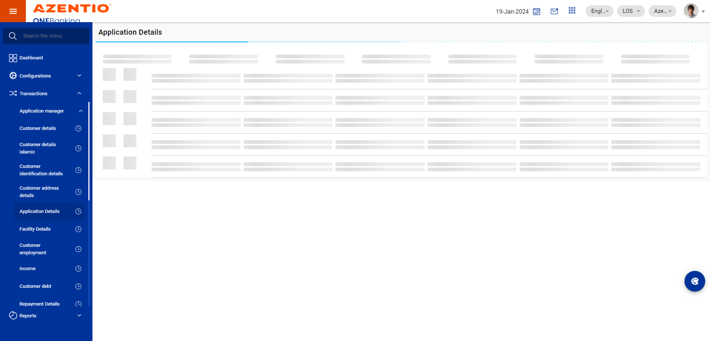Then Choose the data set id to verify nature of employment as self employedstepdefinitions.HooksClass.addScreenshot(io.cucumber.java.Scenario)screenshot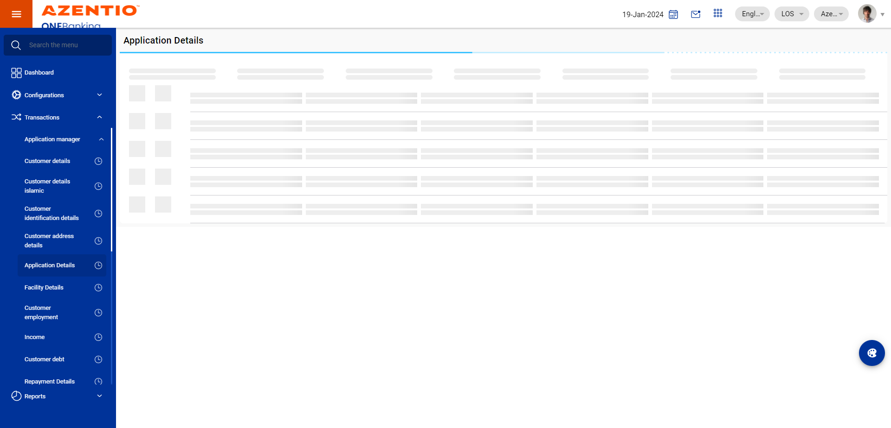Then Click the inbox in customer employmentstepdefinitions.HooksClass.addScreenshot(io.cucumber.java.Scenario)screenshotAnd click the search button in customer employementstepdefinitions.HooksClass.addScreenshot(io.cucumber.java.Scenario)screenshotThen Enter app data entry in the text barstepdefinitions.HooksClass.addScreenshot(io.cucumber.java.Scenario)screenshotAnd click the first action icon in customer employementstepdefinitions.HooksClass.addScreenshot(io.cucumber.java.Scenario)screenshot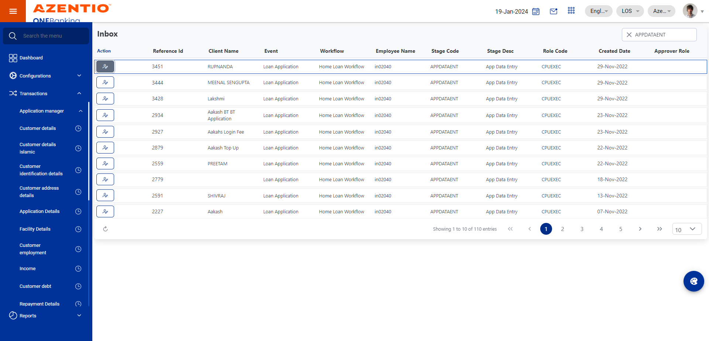Then Click the customer finanace tab in customer employmentstepdefinitions.HooksClass.addScreenshot(io.cucumber.java.Scenario)screenshot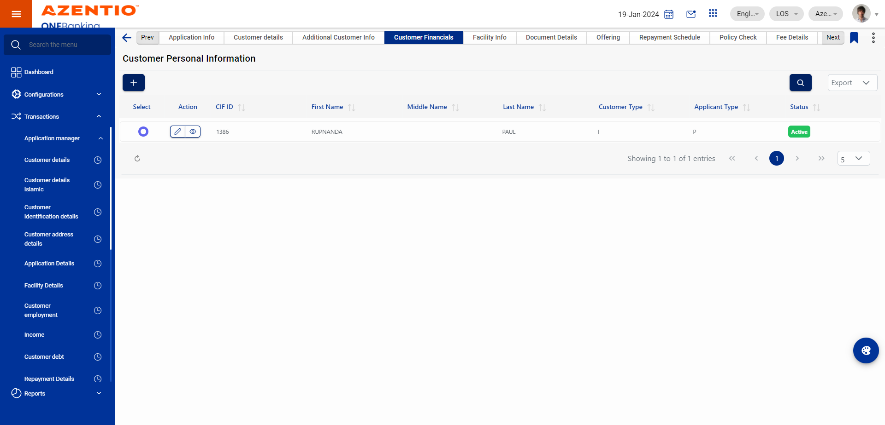And click the first edit icon in customer finance tabstepdefinitions.HooksClass.addScreenshot(io.cucumber.java.Scenario)screenshotThen click the add button in customer employment liststepdefinitions.HooksClass.addScreenshot(io.cucumber.java.Scenario)screenshot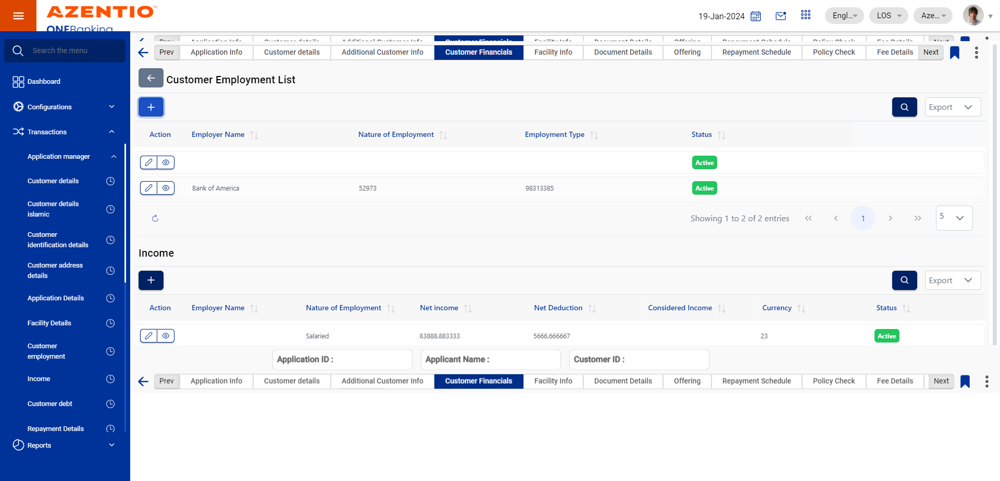And Verify the save and back button in customer employmentstepdefinitions.HooksClass.addScreenshot(io.cucumber.java.Scenario)screenshot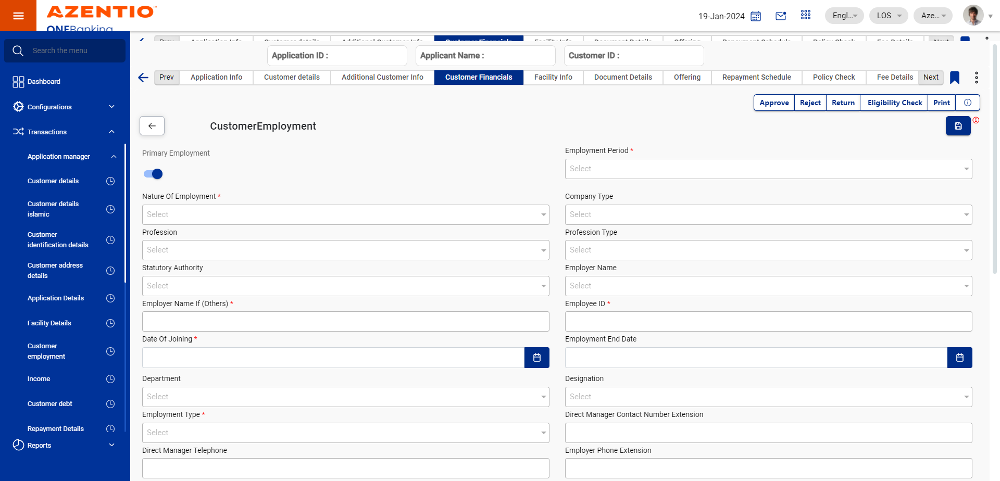And Fill the nature of employment as self employed in customer employmentstepdefinitions.HooksClass.addScreenshot(io.cucumber.java.Scenario)screenshot Then Select and verify the company type field in customer employmentstepdefinitions.HooksClass.addScreenshot(io.cucumber.java.Scenario)screenshotAnd select and verify the field proffesion in customer employmentstepdefinitions.HooksClass.addScreenshot(io.cucumber.java.Scenario)screenshot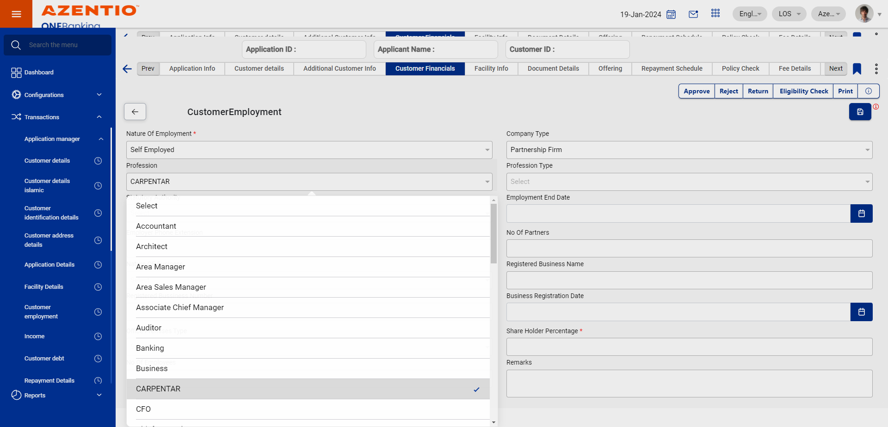And select and verify the field proffesion type in customer employmentstepdefinitions.HooksClass.addScreenshot(io.cucumber.java.Scenario)screenshot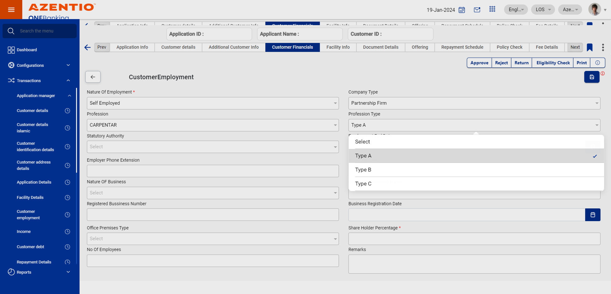Then select and verify the field satutory Authority in customer employmentstepdefinitions.HooksClass.addScreenshot(io.cucumber.java.Scenario)screenshot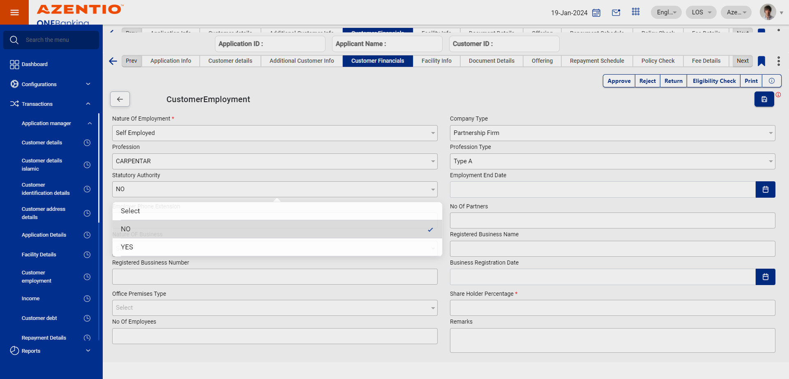Then Fill the employment end date in customer employmentstepdefinitions.HooksClass.addScreenshot(io.cucumber.java.Scenario)screenshot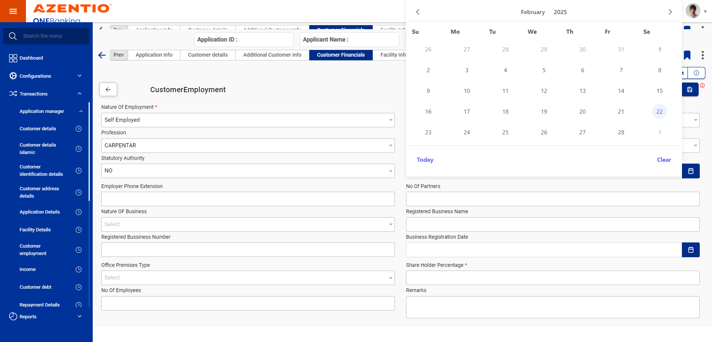Then select and verify the field employer phone extention in customer employmentstepdefinitions.HooksClass.addScreenshot(io.cucumber.java.Scenario)screenshotThen select and verify the field no of partners in customer employmentstepdefinitions.HooksClass.addScreenshot(io.cucumber.java.Scenario)screenshot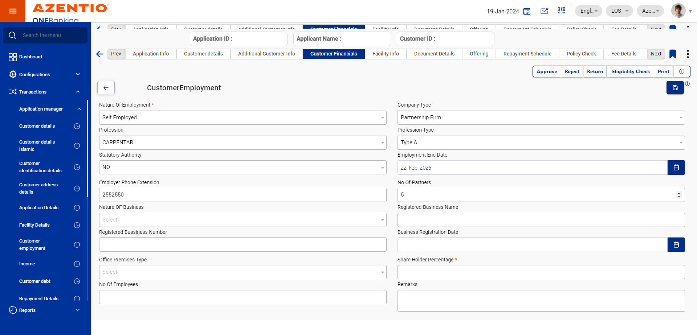Then select and verify the field nature of business in customer employmentstepdefinitions.HooksClass.addScreenshot(io.cucumber.java.Scenario)screenshot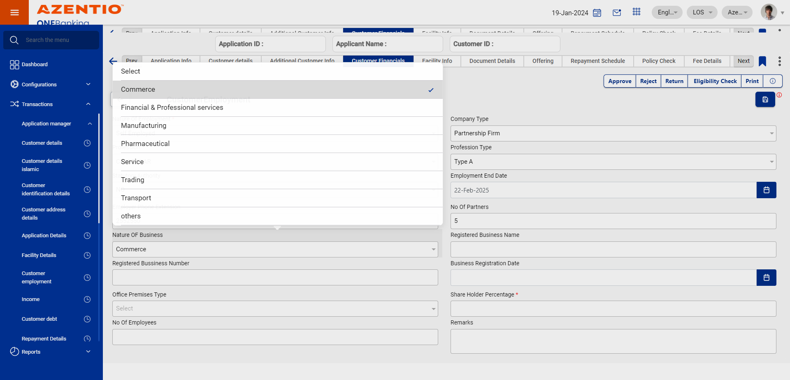Then select and verify the field register business name in customer employmentstepdefinitions.HooksClass.addScreenshot(io.cucumber.java.Scenario)screenshot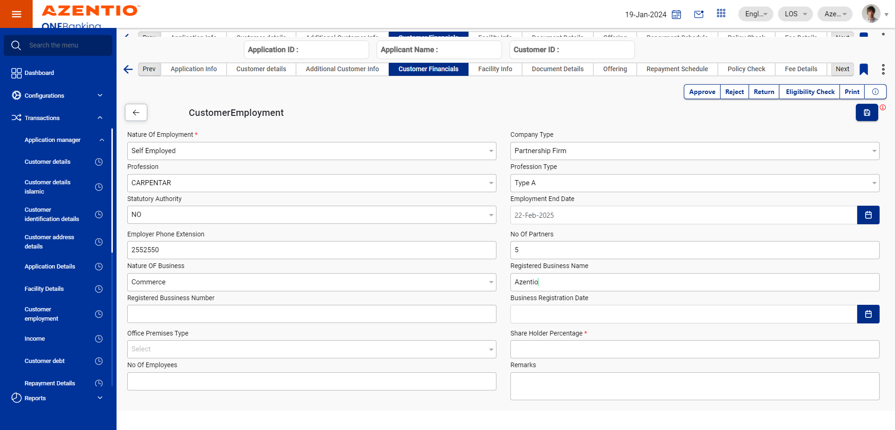Then select and verify the field register business number in customer employmentstepdefinitions.HooksClass.addScreenshot(io.cucumber.java.Scenario)screenshot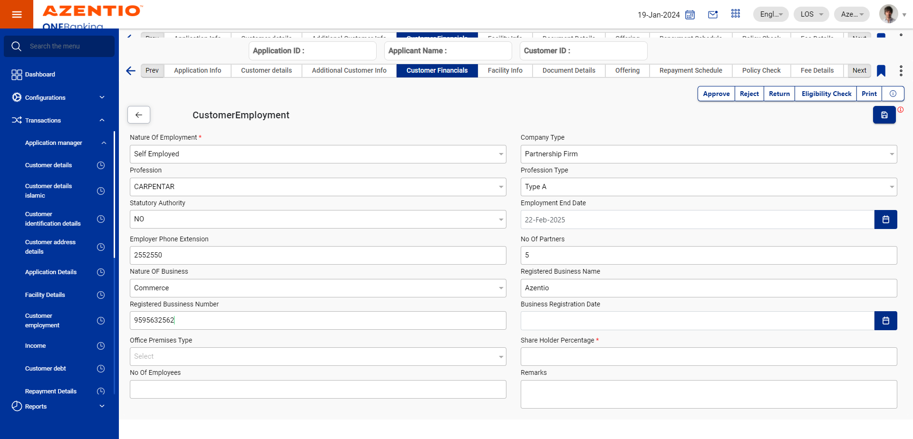Then select and verify the field Business registration date in customer employmentstepdefinitions.HooksClass.addScreenshot(io.cucumber.java.Scenario)screenshot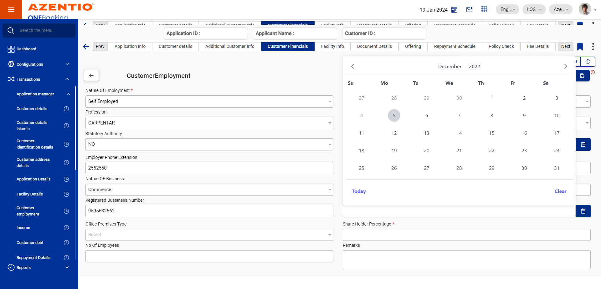Then select and verify the field office premises date in customer employmentStep skippedThen select and verify the field share holder percentage in customer employmentStep skippedThen select and verify the no of employes in customer employmentStep skippedThen fill the remarks in customer employmentStep skippedThen save the record in customer employmentStep skippedFailTo verify fields when nature of employment is SalariedGiven Launch the kuls application and Navigate to Application details view liststepdefinitions.HooksClass.addScreenshot(io.cucumber.java.Scenario)screenshotThen Choose the dataset id to verify field when nature of employment is Salariedstepdefinitions.HooksClass.addScreenshot(io.cucumber.java.Scenario)screenshotThen Click the inbox in customer employmentstepdefinitions.HooksClass.addScreenshot(io.cucumber.java.Scenario)screenshotAnd click the search button in customer employementstepdefinitions.HooksClass.addScreenshot(io.cucumber.java.Scenario)screenshotThen Enter app data entry in the text barstepdefinitions.HooksClass.addScreenshot(io.cucumber.java.Scenario)screenshot
Then Select and verify the company type field in customer employmentstepdefinitions.HooksClass.addScreenshot(io.cucumber.java.Scenario)screenshotAnd select and verify the field proffesion in customer employmentstepdefinitions.HooksClass.addScreenshot(io.cucumber.java.Scenario)screenshot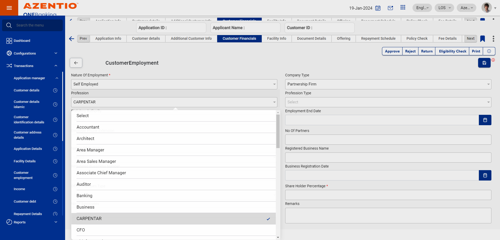And select and verify the field proffesion type in customer employmentstepdefinitions.HooksClass.addScreenshot(io.cucumber.java.Scenario)screenshot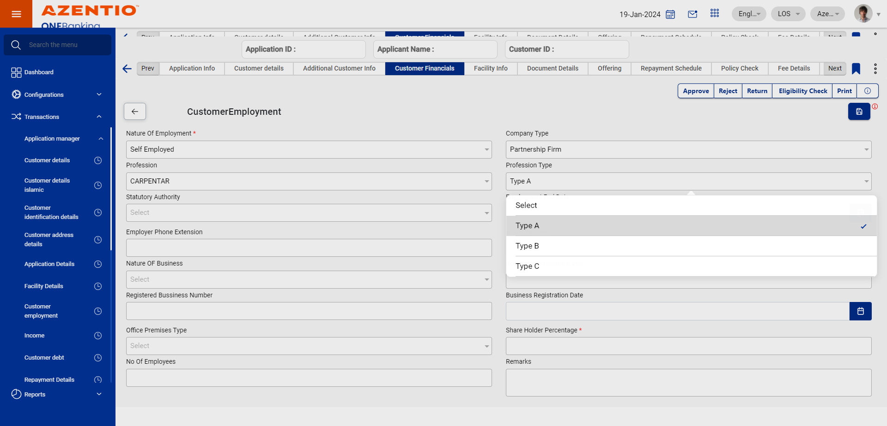Then select and verify the field satutory Authority in customer employmentstepdefinitions.HooksClass.addScreenshot(io.cucumber.java.Scenario)screenshot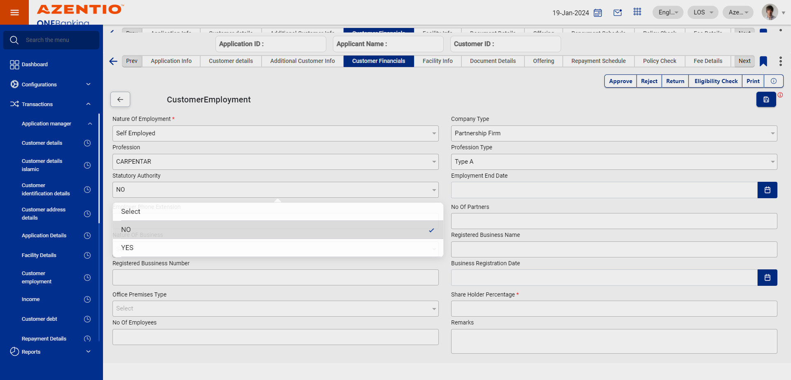Then Fill the employment end date in customer employmentstepdefinitions.HooksClass.addScreenshot(io.cucumber.java.Scenario)screenshot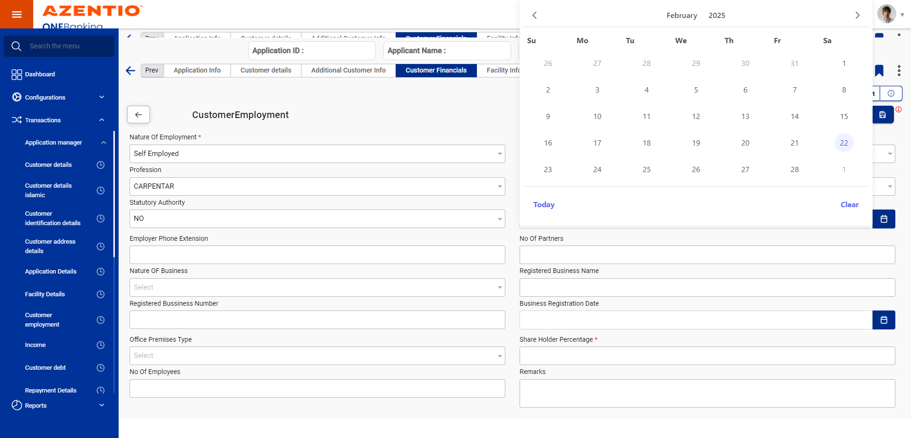Then select and verify the field employer phone extention in customer employmentstepdefinitions.HooksClass.addScreenshot(io.cucumber.java.Scenario)screenshotThen select and verify the field no of partners in customer employmentstepdefinitions.HooksClass.addScreenshot(io.cucumber.java.Scenario)screenshot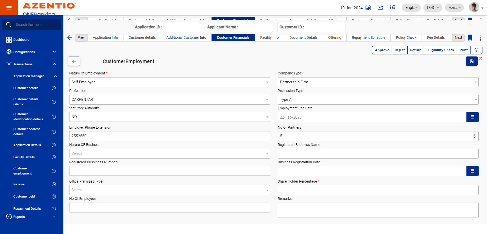Then select and verify the field nature of business in customer employmentstepdefinitions.HooksClass.addScreenshot(io.cucumber.java.Scenario)screenshot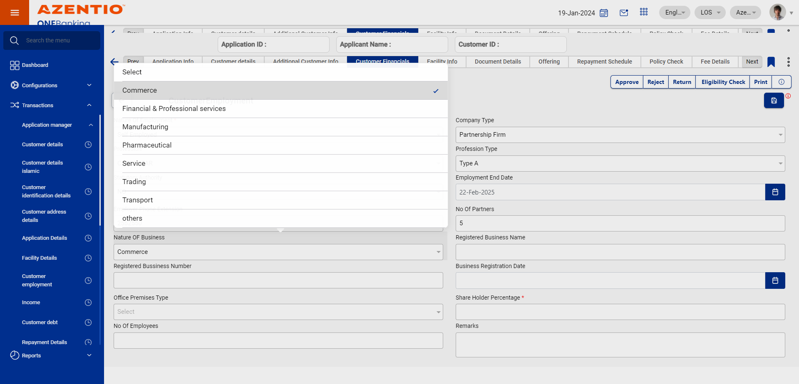Then select and verify the field register business name in customer employmentstepdefinitions.HooksClass.addScreenshot(io.cucumber.java.Scenario)screenshot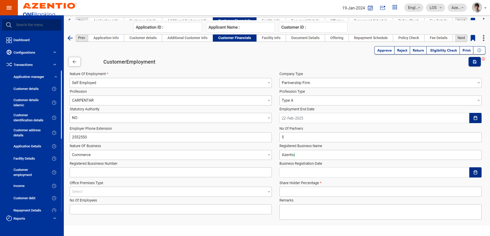Then select and verify the field register business number in customer employmentstepdefinitions.HooksClass.addScreenshot(io.cucumber.java.Scenario)screenshot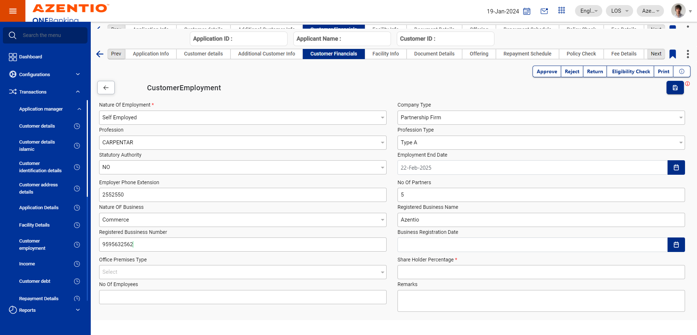Then select and verify the field Business registration date in customer employmentstepdefinitions.HooksClass.addScreenshot(io.cucumber.java.Scenario)screenshot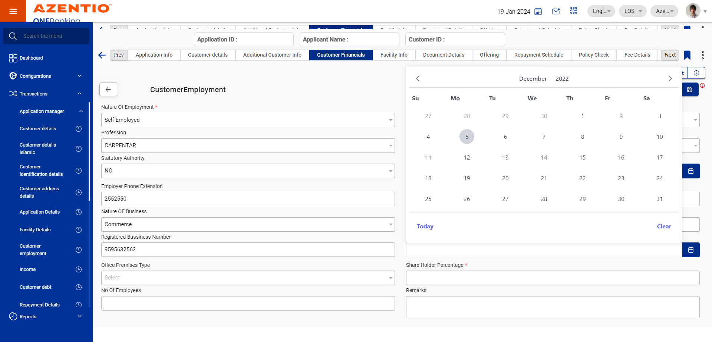Then select and verify the field office premises date in customer employmentStep skippedThen select and verify the field share holder percentage in customer employmentStep skippedThen select and verify the no of employes in customer employmentStep skippedThen fill the remarks in customer employmentStep skippedThen save the record in customer employmentStep skippedFailTo verify fields when nature of employment is SalariedGiven Launch the kuls application and Navigate to Application details view liststepdefinitions.HooksClass.addScreenshot(io.cucumber.java.Scenario)screenshotThen Choose the dataset id to verify field when nature of employment is Salariedstepdefinitions.HooksClass.addScreenshot(io.cucumber.java.Scenario)screenshotThen Click the inbox in customer employmentstepdefinitions.HooksClass.addScreenshot(io.cucumber.java.Scenario)screenshotAnd click the search button in customer employementstepdefinitions.HooksClass.addScreenshot(io.cucumber.java.Scenario)screenshotThen Enter app data entry in the text barstepdefinitions.HooksClass.addScreenshot(io.cucumber.java.Scenario)screenshot And click the first action icon in customer employementstepdefinitions.HooksClass.addScreenshot(io.cucumber.java.Scenario)screenshotThen Click the customer finanace tab in customer employmentstepdefinitions.HooksClass.addScreenshot(io.cucumber.java.Scenario)screenshot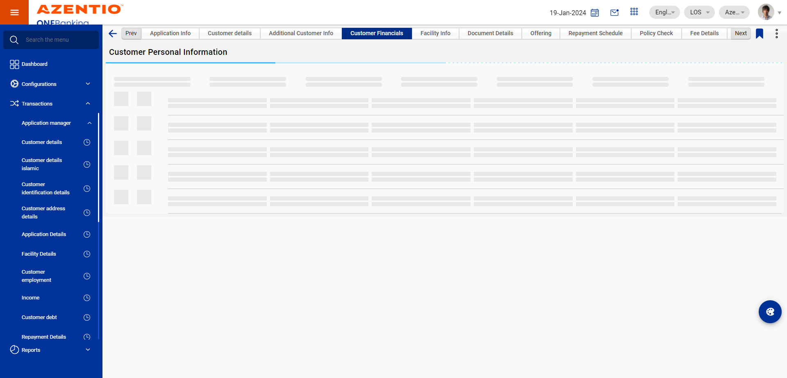And click the first edit icon in customer finance tabstepdefinitions.HooksClass.addScreenshot(io.cucumber.java.Scenario)screenshot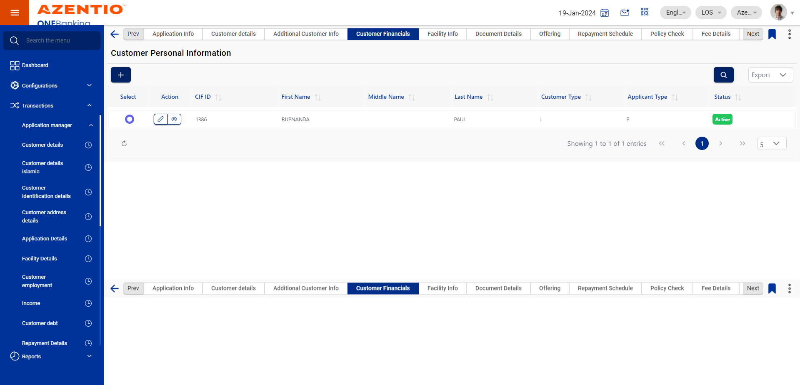Then click the add button in customer employment liststepdefinitions.HooksClass.addScreenshot(io.cucumber.java.Scenario)screenshot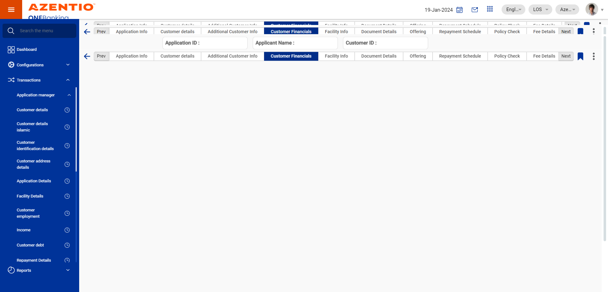And Verify the save and back button in customer employmentstepdefinitions.HooksClass.addScreenshot(io.cucumber.java.Scenario)screenshotAnd Fill the nature of employment as salaried in customer employmentstepdefinitions.HooksClass.addScreenshot(io.cucumber.java.Scenario)screenshot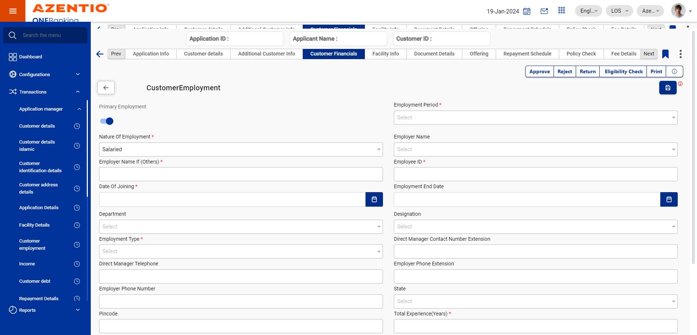Then choose the employment period and validate in customer employmentstepdefinitions.HooksClass.addScreenshot(io.cucumber.java.Scenario)screenshot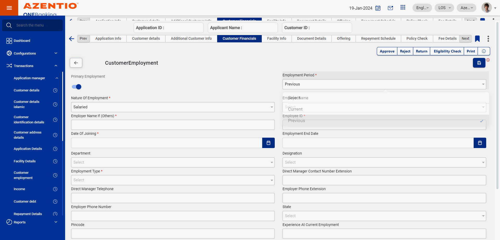And Fill the employer name and validate in customer employmentstepdefinitions.HooksClass.addScreenshot(io.cucumber.java.Scenario)screenshotAnd Fill and verify the field employer id in customer employmentstepdefinitions.HooksClass.addScreenshot(io.cucumber.java.Scenario)screenshot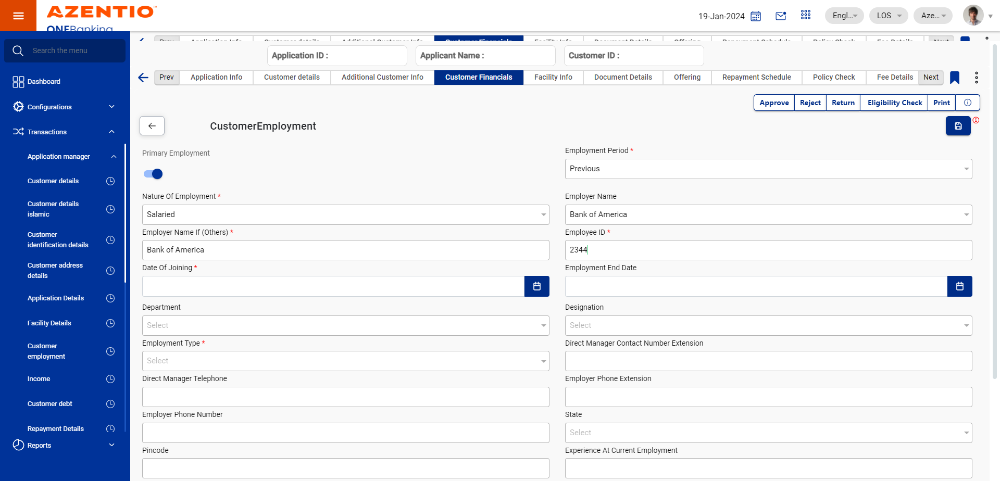Then select and verify the field Date of Joining in customer employmentstepdefinitions.HooksClass.addScreenshot(io.cucumber.java.Scenario)screenshotAnd select and verify the field Employment End date in customer emplymentstepdefinitions.HooksClass.addScreenshot(io.cucumber.java.Scenario)screenshotThen select and verify the field Department in customer employmentstepdefinitions.HooksClass.addScreenshot(io.cucumber.java.Scenario)screenshot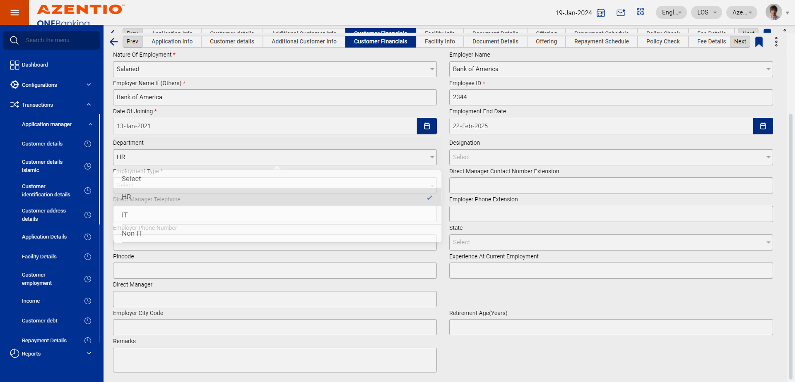And select and verify the field Designation in customer employmentstepdefinitions.HooksClass.addScreenshot(io.cucumber.java.Scenario)screenshotThen select and verify the field employment type in customer employmentstepdefinitions.HooksClass.addScreenshot(io.cucumber.java.Scenario)screenshotAnd Fill and verify the field Direct Manager Contact Number Extension in customer employmentstepdefinitions.HooksClass.addScreenshot(io.cucumber.java.Scenario)screenshotAnd Fill and verify the field Direct Manager telephone in customer employmentstepdefinitions.HooksClass.addScreenshot(io.cucumber.java.Scenario)screenshotThen fill and verify the Employer Phone Number in customer employmentstepdefinitions.HooksClass.addScreenshot(io.cucumber.java.Scenario)screenshotThen fill and verify the field Employer City Code in customer employmentstepdefinitions.HooksClass.addScreenshot(io.cucumber.java.Scenario)screenshot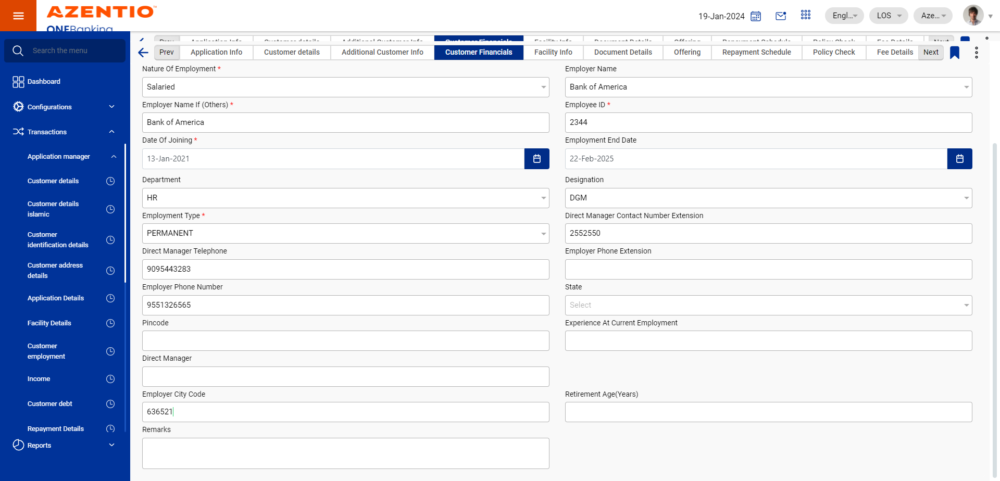Then fill and verify the field Employer Phone Extension in customer employmentstepdefinitions.HooksClass.addScreenshot(io.cucumber.java.Scenario)screenshotAnd select and verify the field Retirement Age in customer employmentstepdefinitions.HooksClass.addScreenshot(io.cucumber.java.Scenario)screenshotAnd Fill and verify the field Direct Manager in customer employmentstepdefinitions.HooksClass.addScreenshot(io.cucumber.java.Scenario)screenshotThen Fill the state in customer employmentstepdefinitions.HooksClass.addScreenshot(io.cucumber.java.Scenario)screenshot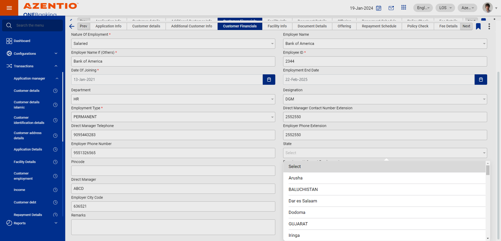Then Fill the pincode in customer employmentstepdefinitions.HooksClass.addScreenshot(io.cucumber.java.Scenario)screenshot
And click the first action icon in customer employementstepdefinitions.HooksClass.addScreenshot(io.cucumber.java.Scenario)screenshotThen Click the customer finanace tab in customer employmentstepdefinitions.HooksClass.addScreenshot(io.cucumber.java.Scenario)screenshot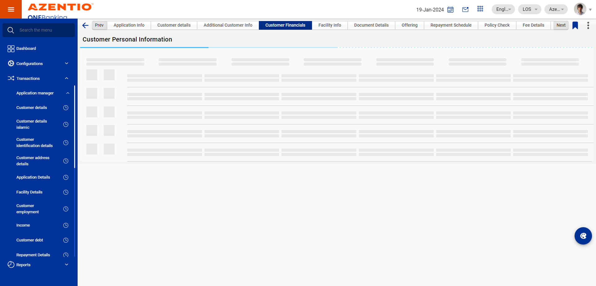And click the first edit icon in customer finance tabstepdefinitions.HooksClass.addScreenshot(io.cucumber.java.Scenario)screenshot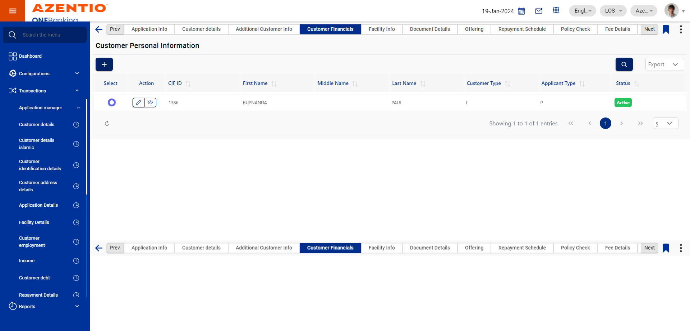Then click the add button in customer employment liststepdefinitions.HooksClass.addScreenshot(io.cucumber.java.Scenario)screenshot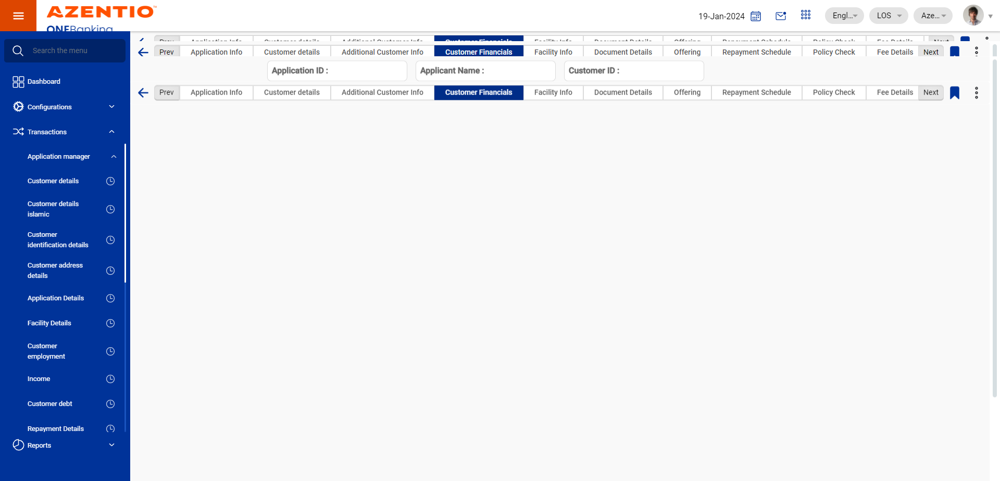And Verify the save and back button in customer employmentstepdefinitions.HooksClass.addScreenshot(io.cucumber.java.Scenario)screenshotAnd Fill the nature of employment as salaried in customer employmentstepdefinitions.HooksClass.addScreenshot(io.cucumber.java.Scenario)screenshot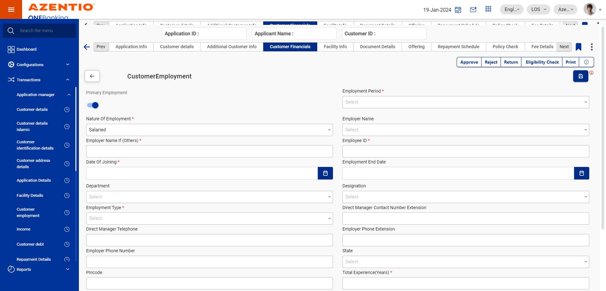Then choose the employment period and validate in customer employmentstepdefinitions.HooksClass.addScreenshot(io.cucumber.java.Scenario)screenshot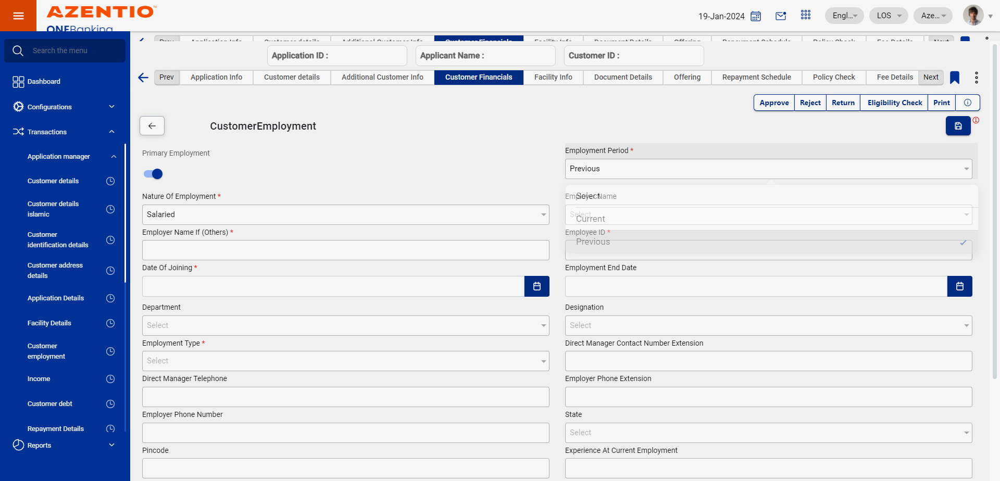And Fill the employer name and validate in customer employmentstepdefinitions.HooksClass.addScreenshot(io.cucumber.java.Scenario)screenshotAnd Fill and verify the field employer id in customer employmentstepdefinitions.HooksClass.addScreenshot(io.cucumber.java.Scenario)screenshot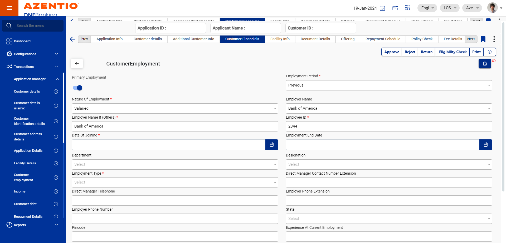Then select and verify the field Date of Joining in customer employmentstepdefinitions.HooksClass.addScreenshot(io.cucumber.java.Scenario)screenshotAnd select and verify the field Employment End date in customer emplymentstepdefinitions.HooksClass.addScreenshot(io.cucumber.java.Scenario)screenshotThen select and verify the field Department in customer employmentstepdefinitions.HooksClass.addScreenshot(io.cucumber.java.Scenario)screenshot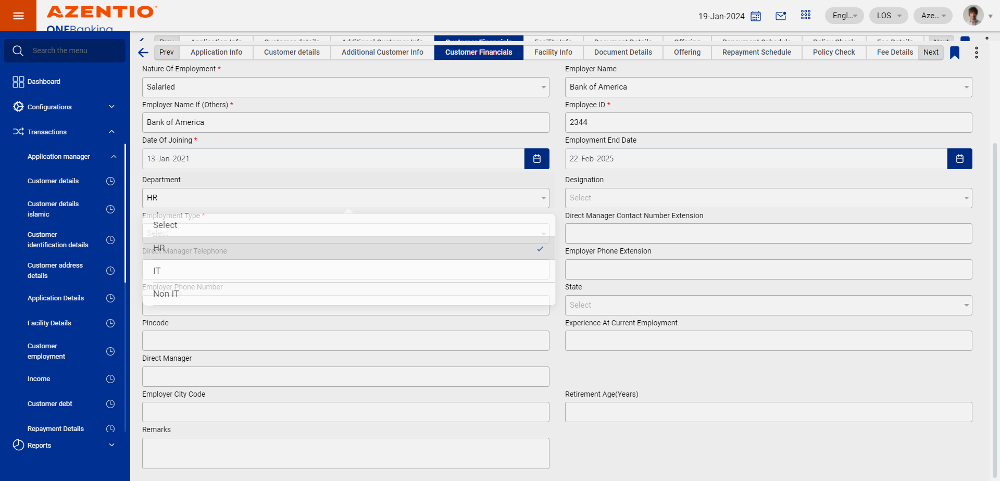And select and verify the field Designation in customer employmentstepdefinitions.HooksClass.addScreenshot(io.cucumber.java.Scenario)screenshotThen select and verify the field employment type in customer employmentstepdefinitions.HooksClass.addScreenshot(io.cucumber.java.Scenario)screenshotAnd Fill and verify the field Direct Manager Contact Number Extension in customer employmentstepdefinitions.HooksClass.addScreenshot(io.cucumber.java.Scenario)screenshotAnd Fill and verify the field Direct Manager telephone in customer employmentstepdefinitions.HooksClass.addScreenshot(io.cucumber.java.Scenario)screenshotThen fill and verify the Employer Phone Number in customer employmentstepdefinitions.HooksClass.addScreenshot(io.cucumber.java.Scenario)screenshotThen fill and verify the field Employer City Code in customer employmentstepdefinitions.HooksClass.addScreenshot(io.cucumber.java.Scenario)screenshot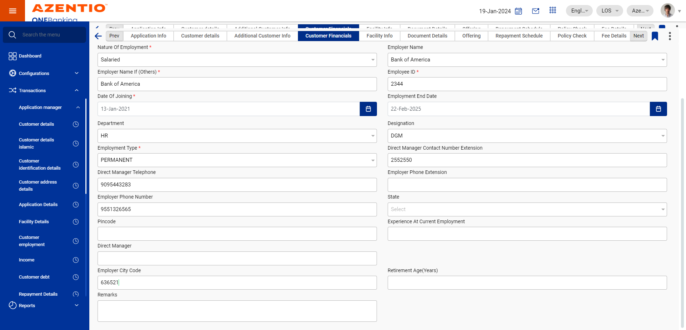Then fill and verify the field Employer Phone Extension in customer employmentstepdefinitions.HooksClass.addScreenshot(io.cucumber.java.Scenario)screenshotAnd select and verify the field Retirement Age in customer employmentstepdefinitions.HooksClass.addScreenshot(io.cucumber.java.Scenario)screenshotAnd Fill and verify the field Direct Manager in customer employmentstepdefinitions.HooksClass.addScreenshot(io.cucumber.java.Scenario)screenshotThen Fill the state in customer employmentstepdefinitions.HooksClass.addScreenshot(io.cucumber.java.Scenario)screenshot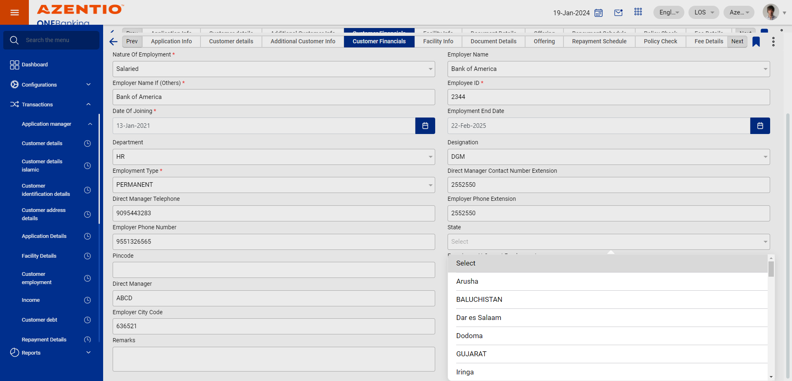Then Fill the pincode in customer employmentstepdefinitions.HooksClass.addScreenshot(io.cucumber.java.Scenario)screenshot Then Fill the experience at current employment in customer employmentStep skippedThen save the record in customer employment as salariedStep skippedFailTo verify fields in list view in customer employmentAnd Choose the data set id for list view validation in customer employmentstepdefinitions.HooksClass.addScreenshot(io.cucumber.java.Scenario)screenshot
Then Fill the experience at current employment in customer employmentStep skippedThen save the record in customer employment as salariedStep skippedFailTo verify fields in list view in customer employmentAnd Choose the data set id for list view validation in customer employmentstepdefinitions.HooksClass.addScreenshot(io.cucumber.java.Scenario)screenshot Given Launch the kuls application and Navigate to Application details view liststepdefinitions.HooksClass.addScreenshot(io.cucumber.java.Scenario)screenshot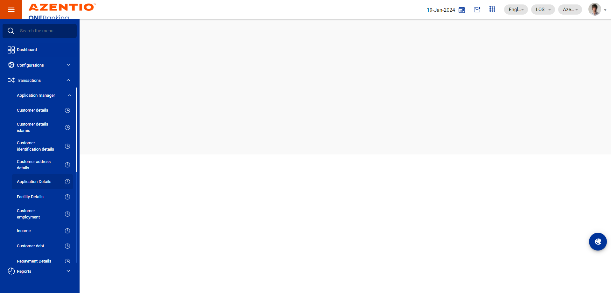Then Click the inbox in customer employmentstepdefinitions.HooksClass.addScreenshot(io.cucumber.java.Scenario)screenshot
Given Launch the kuls application and Navigate to Application details view liststepdefinitions.HooksClass.addScreenshot(io.cucumber.java.Scenario)screenshot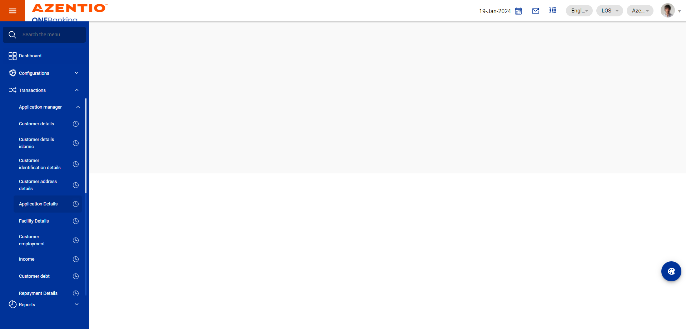Then Click the inbox in customer employmentstepdefinitions.HooksClass.addScreenshot(io.cucumber.java.Scenario)screenshot And click the search button in customer employementstepdefinitions.HooksClass.addScreenshot(io.cucumber.java.Scenario)screenshot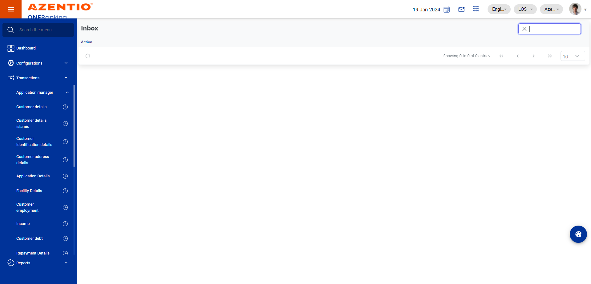Then Enter app data entry in the text barstepdefinitions.HooksClass.addScreenshot(io.cucumber.java.Scenario)screenshot
And click the search button in customer employementstepdefinitions.HooksClass.addScreenshot(io.cucumber.java.Scenario)screenshot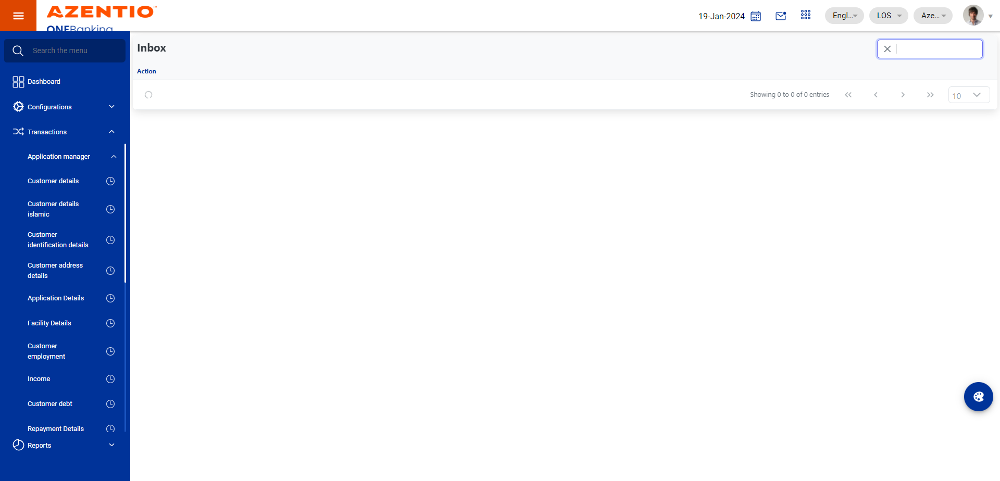Then Enter app data entry in the text barstepdefinitions.HooksClass.addScreenshot(io.cucumber.java.Scenario)screenshot And click the first action icon in customer employementstepdefinitions.HooksClass.addScreenshot(io.cucumber.java.Scenario)screenshotThen Click the customer finanace tab in customer employmentstepdefinitions.HooksClass.addScreenshot(io.cucumber.java.Scenario)screenshotAnd click the first edit icon in customer finance tabstepdefinitions.HooksClass.addScreenshot(io.cucumber.java.Scenario)screenshot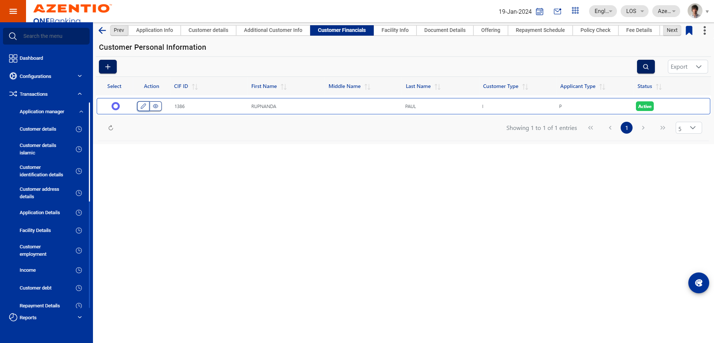Then verify field Employer name in listview of the customer employmentstepdefinitions.HooksClass.addScreenshot(io.cucumber.java.Scenario)screenshot
And click the first action icon in customer employementstepdefinitions.HooksClass.addScreenshot(io.cucumber.java.Scenario)screenshotThen Click the customer finanace tab in customer employmentstepdefinitions.HooksClass.addScreenshot(io.cucumber.java.Scenario)screenshotAnd click the first edit icon in customer finance tabstepdefinitions.HooksClass.addScreenshot(io.cucumber.java.Scenario)screenshot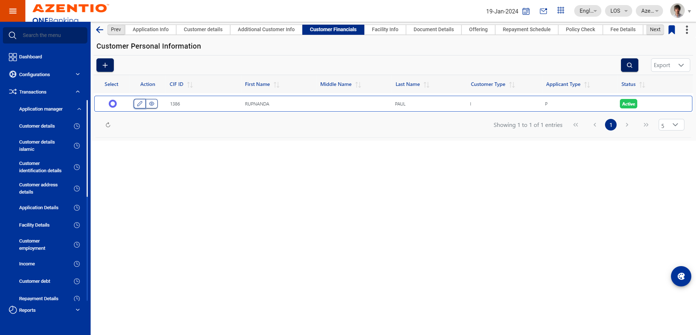Then verify field Employer name in listview of the customer employmentstepdefinitions.HooksClass.addScreenshot(io.cucumber.java.Scenario)screenshot Then verify field nature of employment in listview of the customer employmentstepdefinitions.HooksClass.addScreenshot(io.cucumber.java.Scenario)screenshot
Then verify field nature of employment in listview of the customer employmentstepdefinitions.HooksClass.addScreenshot(io.cucumber.java.Scenario)screenshot Then verify field employment type in listview of the customer employmentstepdefinitions.HooksClass.addScreenshot(io.cucumber.java.Scenario)screenshot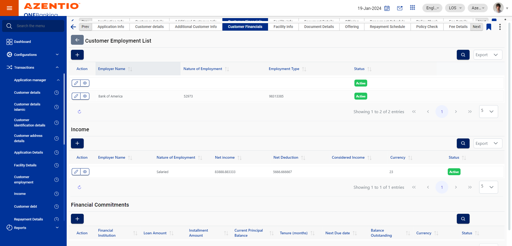Then verify field status in listview of the customer employmentstepdefinitions.HooksClass.addScreenshot(io.cucumber.java.Scenario)screenshot
Then verify field employment type in listview of the customer employmentstepdefinitions.HooksClass.addScreenshot(io.cucumber.java.Scenario)screenshot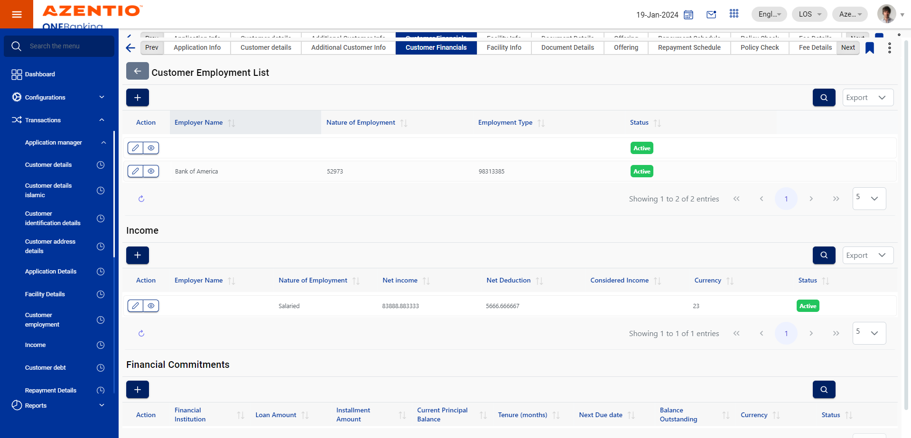Then verify field status in listview of the customer employmentstepdefinitions.HooksClass.addScreenshot(io.cucumber.java.Scenario)screenshot And verify the functionality of Search box with matching data in list view of the customer employmentstepdefinitions.HooksClass.addScreenshot(io.cucumber.java.Scenario)screenshot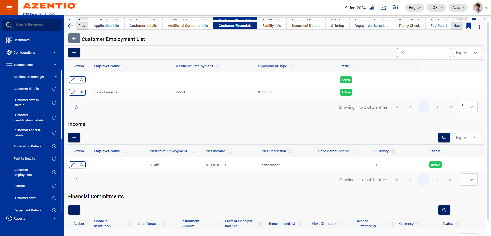And verify the functionality of Search box with mismatch data in list view of the customer employmentStep skippedThen verify the functionality of Export to PDF button in the list view of the customer employmentStep skippedThen verify the functionality of Export to Excel button in the list view of the customer employmentStep skippedFailverify user is able to add new Employment Details record in the system by entering invalid dataThen choose the data set id for invalid data in customer employmentstepdefinitions.HooksClass.addScreenshot(io.cucumber.java.Scenario)screenshot
And verify the functionality of Search box with matching data in list view of the customer employmentstepdefinitions.HooksClass.addScreenshot(io.cucumber.java.Scenario)screenshot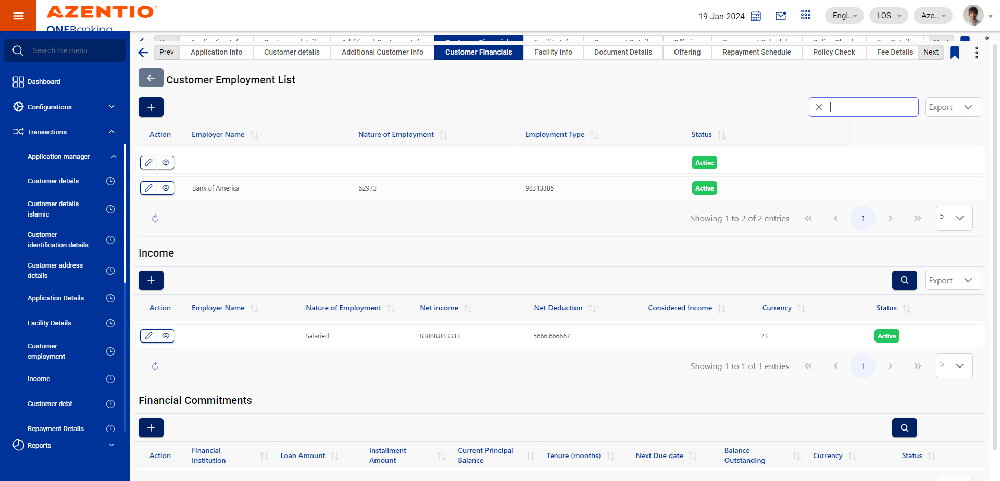And verify the functionality of Search box with mismatch data in list view of the customer employmentStep skippedThen verify the functionality of Export to PDF button in the list view of the customer employmentStep skippedThen verify the functionality of Export to Excel button in the list view of the customer employmentStep skippedFailverify user is able to add new Employment Details record in the system by entering invalid dataThen choose the data set id for invalid data in customer employmentstepdefinitions.HooksClass.addScreenshot(io.cucumber.java.Scenario)screenshot Given Launch the kuls application and Navigate to Application details view liststepdefinitions.HooksClass.addScreenshot(io.cucumber.java.Scenario)screenshot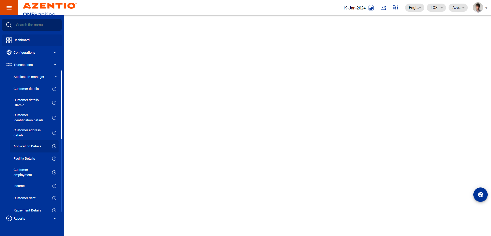Then Click the inbox in customer employmentstepdefinitions.HooksClass.addScreenshot(io.cucumber.java.Scenario)screenshot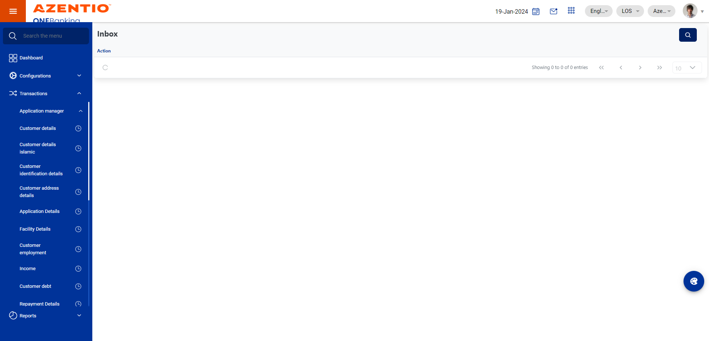And click the search button in customer employementstepdefinitions.HooksClass.addScreenshot(io.cucumber.java.Scenario)screenshot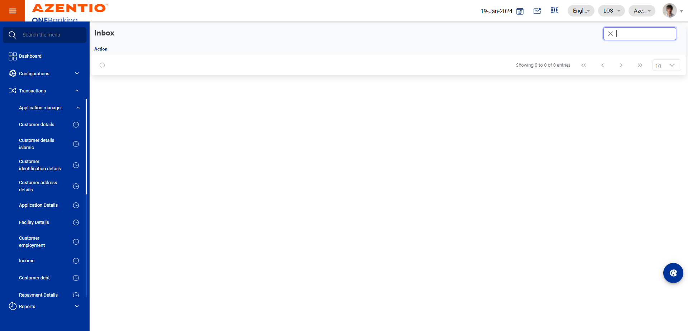Then Enter app data entry in the text barstepdefinitions.HooksClass.addScreenshot(io.cucumber.java.Scenario)screenshotAnd click the first action icon in customer employementstepdefinitions.HooksClass.addScreenshot(io.cucumber.java.Scenario)screenshot
Given Launch the kuls application and Navigate to Application details view liststepdefinitions.HooksClass.addScreenshot(io.cucumber.java.Scenario)screenshot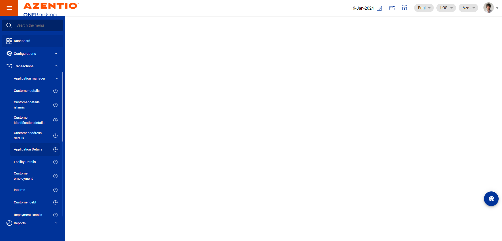Then Click the inbox in customer employmentstepdefinitions.HooksClass.addScreenshot(io.cucumber.java.Scenario)screenshot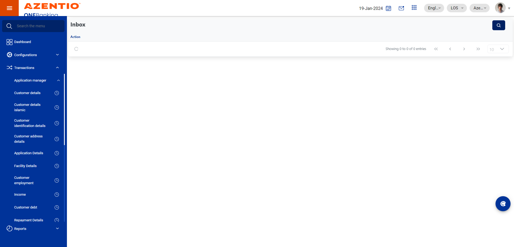And click the search button in customer employementstepdefinitions.HooksClass.addScreenshot(io.cucumber.java.Scenario)screenshot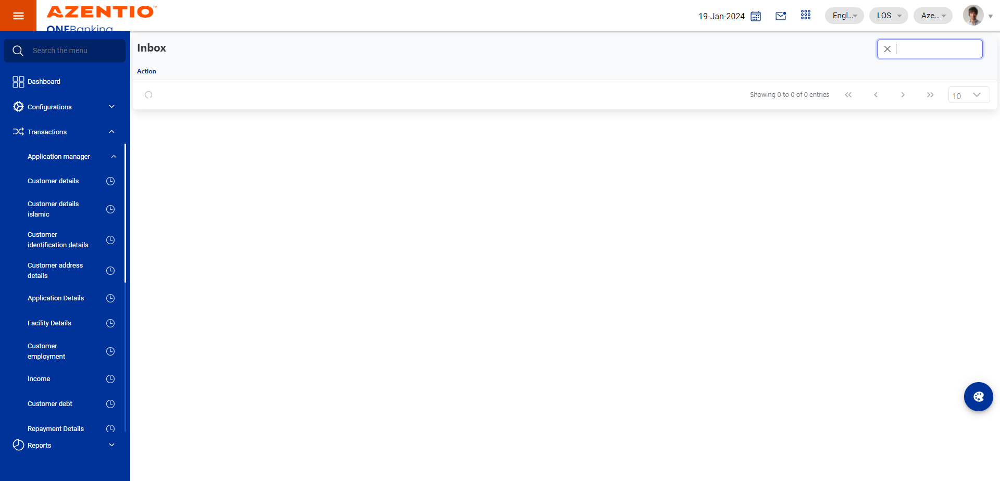Then Enter app data entry in the text barstepdefinitions.HooksClass.addScreenshot(io.cucumber.java.Scenario)screenshotAnd click the first action icon in customer employementstepdefinitions.HooksClass.addScreenshot(io.cucumber.java.Scenario)screenshot Then Click the customer finanace tab in customer employmentstepdefinitions.HooksClass.addScreenshot(io.cucumber.java.Scenario)screenshot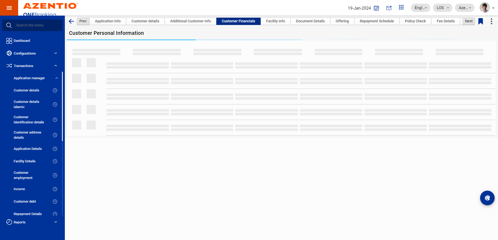And click the first edit icon in customer finance tabstepdefinitions.HooksClass.addScreenshot(io.cucumber.java.Scenario)screenshot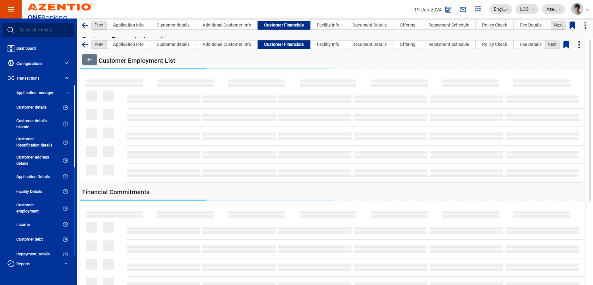And user click on Customer Employement Add buttonstepdefinitions.HooksClass.addScreenshot(io.cucumber.java.Scenario)screenshot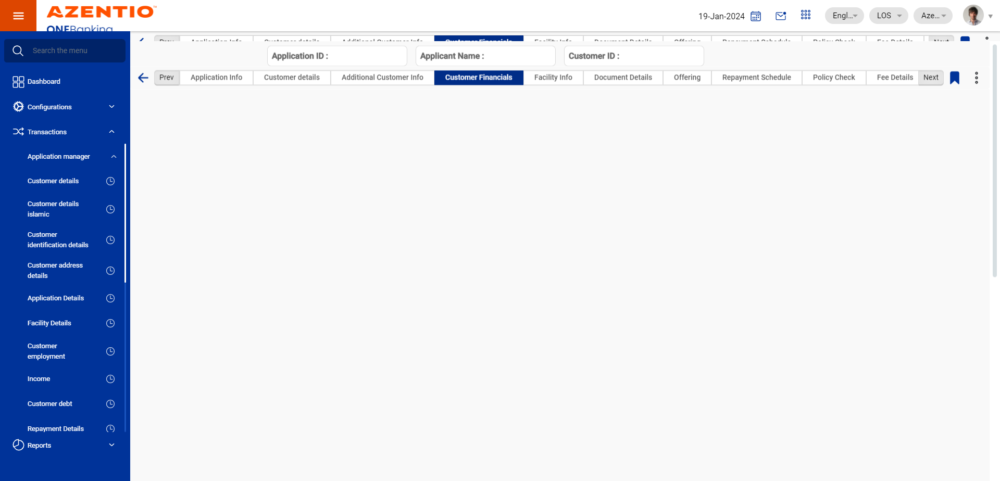And user Enter character value in Numeric Fieldstepdefinitions.HooksClass.addScreenshot(io.cucumber.java.Scenario)screenshot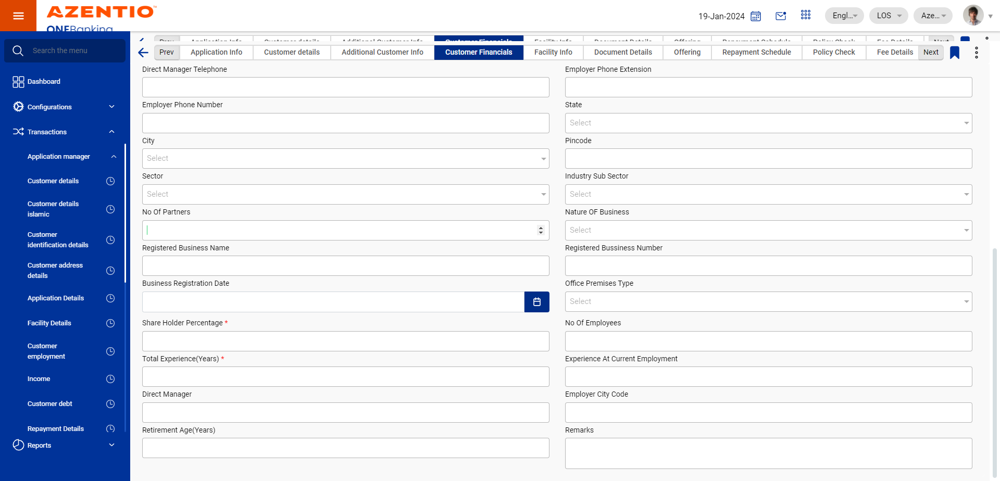And user Enter Special character in Any fieldStep skippedAnd Validate the Message and verify itStep skippedThen save the record in customer employment as salariedStep skippedThen user verify the Required field proper validation messageStep skippedFailTo verify maker user can able to update the customer employement details record with invalid test inputsGiven Launch the kuls application and Navigate to Application details view liststepdefinitions.HooksClass.addScreenshot(io.cucumber.java.Scenario)screenshotThen Choose the data set id for invalid input for updation in customer employmentstepdefinitions.HooksClass.addScreenshot(io.cucumber.java.Scenario)screenshotThen Click the inbox in customer employmentstepdefinitions.HooksClass.addScreenshot(io.cucumber.java.Scenario)screenshotAnd click the search button in customer employementstepdefinitions.HooksClass.addScreenshot(io.cucumber.java.Scenario)screenshotThen Enter app data entry in the text barstepdefinitions.HooksClass.addScreenshot(io.cucumber.java.Scenario)screenshotAnd click the first action icon in customer employementstepdefinitions.HooksClass.addScreenshot(io.cucumber.java.Scenario)screenshotAnd go to customer financial tabstepdefinitions.HooksClass.addScreenshot(io.cucumber.java.Scenario)screenshot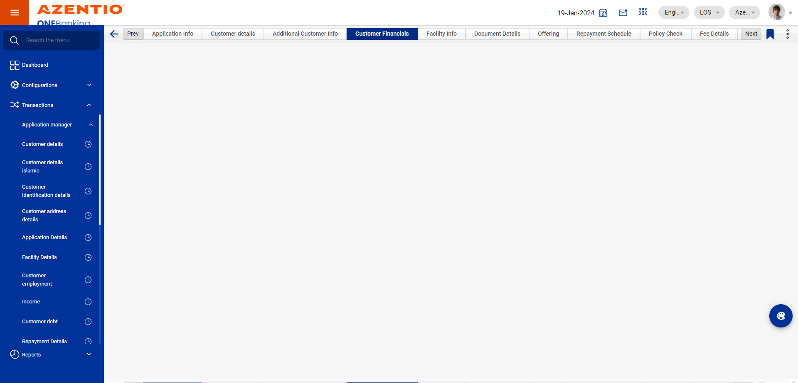And click on edit button in customer personal details list view recordstepdefinitions.HooksClass.addScreenshot(io.cucumber.java.Scenario)screenshot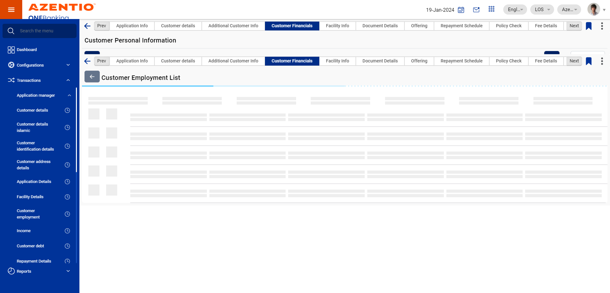And select the customer employement details list view recordstepdefinitions.HooksClass.addScreenshot(io.cucumber.java.Scenario)screenshot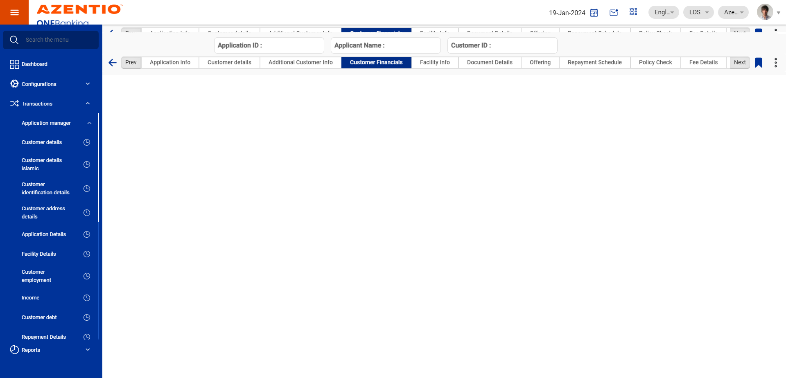And blank the employement period dropdownstepdefinitions.HooksClass.addScreenshot(io.cucumber.java.Scenario)screenshot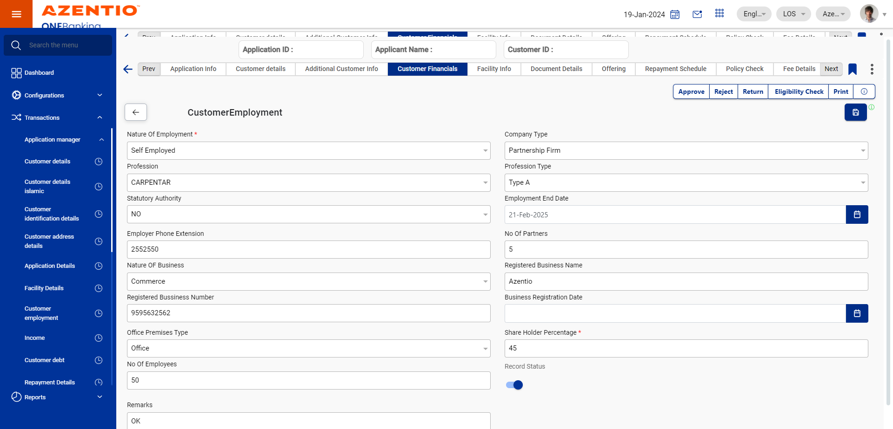And blank the nature of emplyment dropdown fieldStep skippedAnd blank the employername dropdownStep skippedAnd blank the name if other dropdown fieldStep skippedAnd blank the employee ID text box fieldStep skippedAnd blank the date of joining calendar input fieldStep skippedAnd blank the employment type dropdown fieldStep skippedAnd blank the total experience input fieldStep skippedAnd blank the retirement age input fieldStep skippedAnd click on save button after blank the fields in customer employment detailsStep skippedThen verify employment Period field should show the validation for required fieldStep skippedThen verify employer name if other field should show the validation for required fieldStep skippedThen verify nature of employment field should show the validation for required fieldStep skippedThen verify employee ID field should show the validation for required fieldStep skippedThen verify Date of joining field should show the validation for required fieldStep skippedThen verify employment type field should show the validation for required fieldStep skippedThen verify total experience field should show the validation for required fieldStep skippedThen verify retirement age field should show the validation for required fieldStep skippedThen verify employer name field should through the validation for special character inputStep skippedThen verify employee ID field should through the validation for special character inputStep skippedThen verify Direct manager phone number field should through the validation for special character inputStep skippedThen verify employer phone number field should through the validation for special character inputStep skippedThen verify Direct Manager field should through the validation for special character inputStep skippedThen verify system should not allow user to enter more that 10 digit phone number and less than 10 digit phone number in employer phone number fieldStep skippedThen verify the functionlaity of back button in customer EmploymentDetails screenStep skippedFailUpdation of before approved record in customer financials screeenGiven Launch the kuls application and Navigate to Application details view liststepdefinitions.HooksClass.addScreenshot(io.cucumber.java.Scenario)screenshot
Then Click the customer finanace tab in customer employmentstepdefinitions.HooksClass.addScreenshot(io.cucumber.java.Scenario)screenshot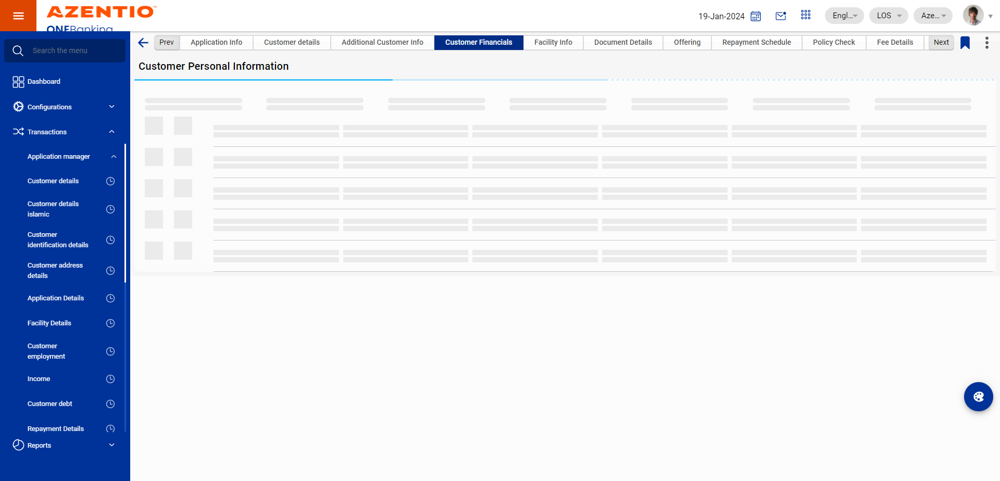And click the first edit icon in customer finance tabstepdefinitions.HooksClass.addScreenshot(io.cucumber.java.Scenario)screenshot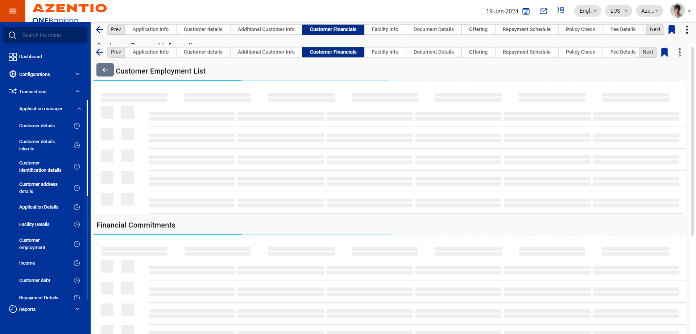And user click on Customer Employement Add buttonstepdefinitions.HooksClass.addScreenshot(io.cucumber.java.Scenario)screenshot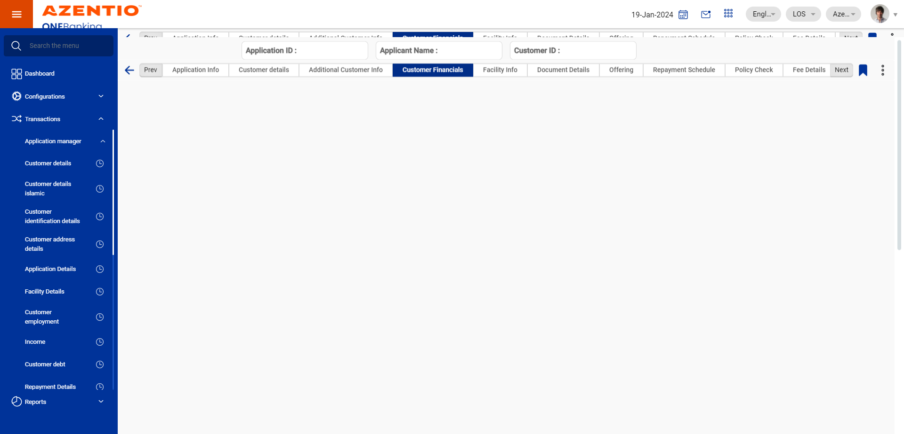And user Enter character value in Numeric Fieldstepdefinitions.HooksClass.addScreenshot(io.cucumber.java.Scenario)screenshot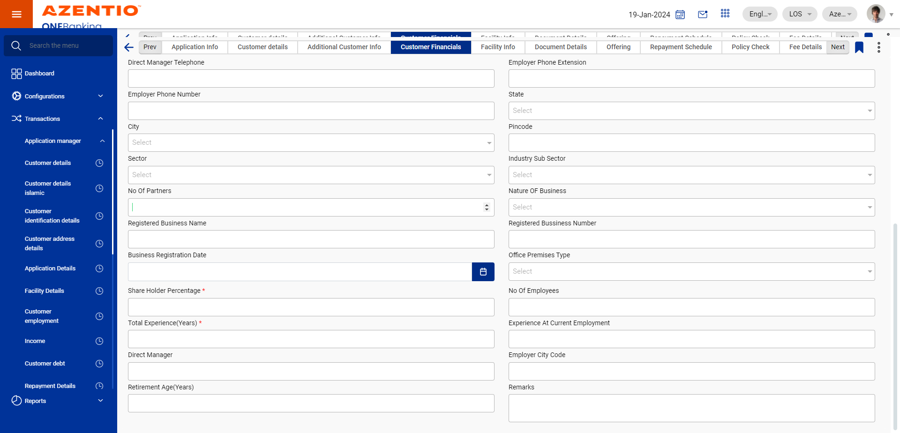And user Enter Special character in Any fieldStep skippedAnd Validate the Message and verify itStep skippedThen save the record in customer employment as salariedStep skippedThen user verify the Required field proper validation messageStep skippedFailTo verify maker user can able to update the customer employement details record with invalid test inputsGiven Launch the kuls application and Navigate to Application details view liststepdefinitions.HooksClass.addScreenshot(io.cucumber.java.Scenario)screenshotThen Choose the data set id for invalid input for updation in customer employmentstepdefinitions.HooksClass.addScreenshot(io.cucumber.java.Scenario)screenshotThen Click the inbox in customer employmentstepdefinitions.HooksClass.addScreenshot(io.cucumber.java.Scenario)screenshotAnd click the search button in customer employementstepdefinitions.HooksClass.addScreenshot(io.cucumber.java.Scenario)screenshotThen Enter app data entry in the text barstepdefinitions.HooksClass.addScreenshot(io.cucumber.java.Scenario)screenshotAnd click the first action icon in customer employementstepdefinitions.HooksClass.addScreenshot(io.cucumber.java.Scenario)screenshotAnd go to customer financial tabstepdefinitions.HooksClass.addScreenshot(io.cucumber.java.Scenario)screenshot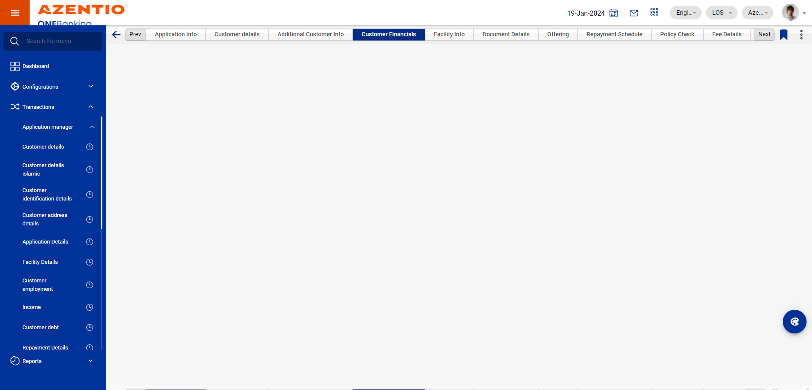And click on edit button in customer personal details list view recordstepdefinitions.HooksClass.addScreenshot(io.cucumber.java.Scenario)screenshot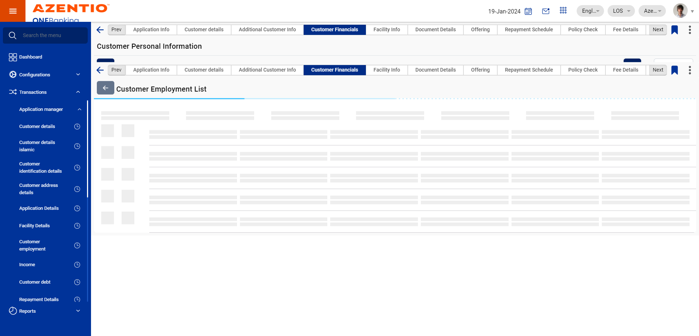And select the customer employement details list view recordstepdefinitions.HooksClass.addScreenshot(io.cucumber.java.Scenario)screenshot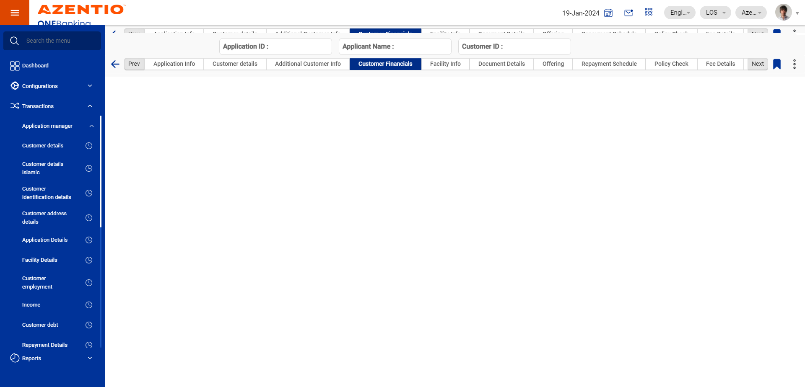And blank the employement period dropdownstepdefinitions.HooksClass.addScreenshot(io.cucumber.java.Scenario)screenshot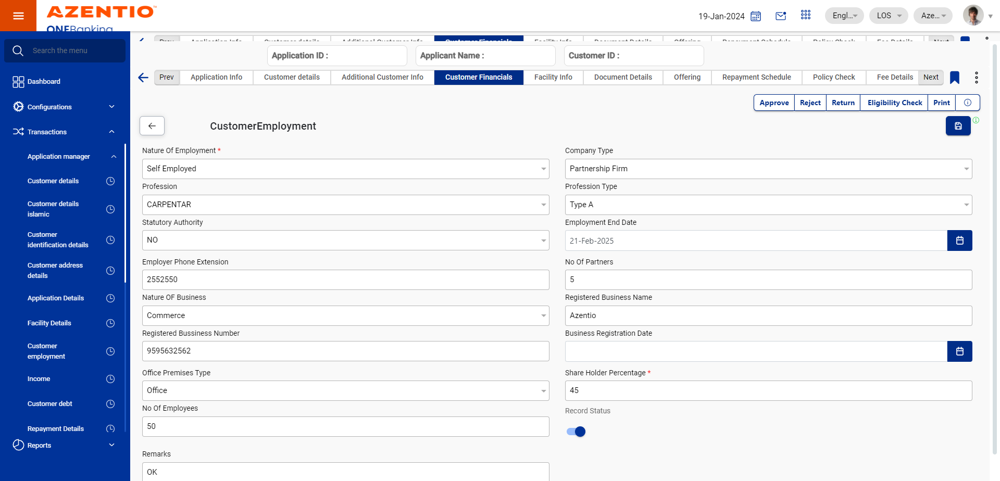And blank the nature of emplyment dropdown fieldStep skippedAnd blank the employername dropdownStep skippedAnd blank the name if other dropdown fieldStep skippedAnd blank the employee ID text box fieldStep skippedAnd blank the date of joining calendar input fieldStep skippedAnd blank the employment type dropdown fieldStep skippedAnd blank the total experience input fieldStep skippedAnd blank the retirement age input fieldStep skippedAnd click on save button after blank the fields in customer employment detailsStep skippedThen verify employment Period field should show the validation for required fieldStep skippedThen verify employer name if other field should show the validation for required fieldStep skippedThen verify nature of employment field should show the validation for required fieldStep skippedThen verify employee ID field should show the validation for required fieldStep skippedThen verify Date of joining field should show the validation for required fieldStep skippedThen verify employment type field should show the validation for required fieldStep skippedThen verify total experience field should show the validation for required fieldStep skippedThen verify retirement age field should show the validation for required fieldStep skippedThen verify employer name field should through the validation for special character inputStep skippedThen verify employee ID field should through the validation for special character inputStep skippedThen verify Direct manager phone number field should through the validation for special character inputStep skippedThen verify employer phone number field should through the validation for special character inputStep skippedThen verify Direct Manager field should through the validation for special character inputStep skippedThen verify system should not allow user to enter more that 10 digit phone number and less than 10 digit phone number in employer phone number fieldStep skippedThen verify the functionlaity of back button in customer EmploymentDetails screenStep skippedFailUpdation of before approved record in customer financials screeenGiven Launch the kuls application and Navigate to Application details view liststepdefinitions.HooksClass.addScreenshot(io.cucumber.java.Scenario)screenshot And choose the data set id for updation of before approved record in customer employmentstepdefinitions.HooksClass.addScreenshot(io.cucumber.java.Scenario)screenshotThen Click the inbox in customer employmentstepdefinitions.HooksClass.addScreenshot(io.cucumber.java.Scenario)screenshotAnd click the search button in customer employementstepdefinitions.HooksClass.addScreenshot(io.cucumber.java.Scenario)screenshotThen Enter app data entry in the text barstepdefinitions.HooksClass.addScreenshot(io.cucumber.java.Scenario)screenshot
And choose the data set id for updation of before approved record in customer employmentstepdefinitions.HooksClass.addScreenshot(io.cucumber.java.Scenario)screenshotThen Click the inbox in customer employmentstepdefinitions.HooksClass.addScreenshot(io.cucumber.java.Scenario)screenshotAnd click the search button in customer employementstepdefinitions.HooksClass.addScreenshot(io.cucumber.java.Scenario)screenshotThen Enter app data entry in the text barstepdefinitions.HooksClass.addScreenshot(io.cucumber.java.Scenario)screenshot And click the first action icon in customer employementstepdefinitions.HooksClass.addScreenshot(io.cucumber.java.Scenario)screenshotAnd go to customer financial tabstepdefinitions.HooksClass.addScreenshot(io.cucumber.java.Scenario)screenshotAnd User click the first edit icon in customer personal informationstepdefinitions.HooksClass.addScreenshot(io.cucumber.java.Scenario)screenshot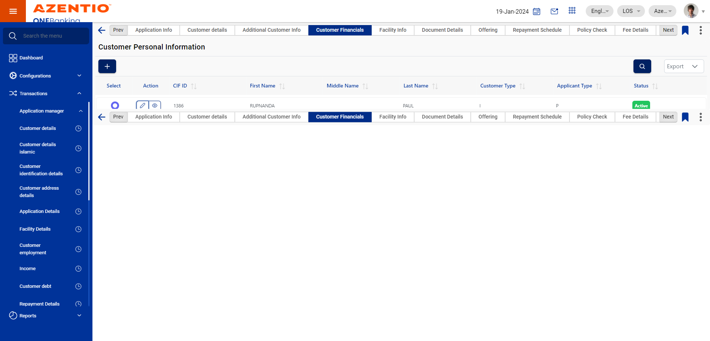And User click the first edit icon in customer employment liststepdefinitions.HooksClass.addScreenshot(io.cucumber.java.Scenario)screenshot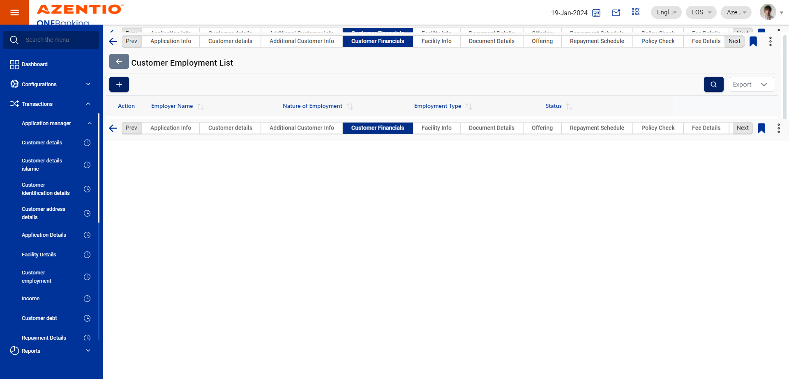And User select and update nature of the employmentstepdefinitions.HooksClass.addScreenshot(io.cucumber.java.Scenario)screenshot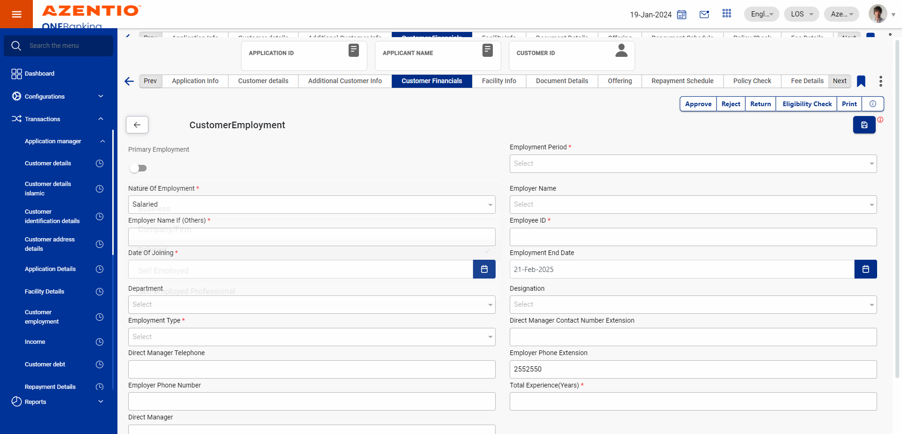And User select and update the employment periodstepdefinitions.HooksClass.addScreenshot(io.cucumber.java.Scenario)screenshot
And click the first action icon in customer employementstepdefinitions.HooksClass.addScreenshot(io.cucumber.java.Scenario)screenshotAnd go to customer financial tabstepdefinitions.HooksClass.addScreenshot(io.cucumber.java.Scenario)screenshotAnd User click the first edit icon in customer personal informationstepdefinitions.HooksClass.addScreenshot(io.cucumber.java.Scenario)screenshot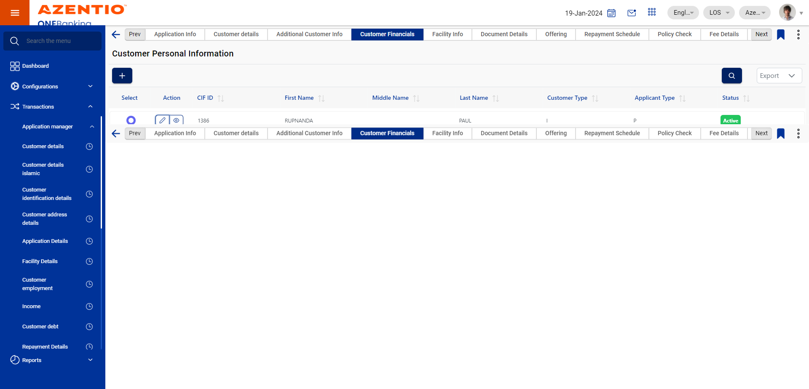And User click the first edit icon in customer employment liststepdefinitions.HooksClass.addScreenshot(io.cucumber.java.Scenario)screenshot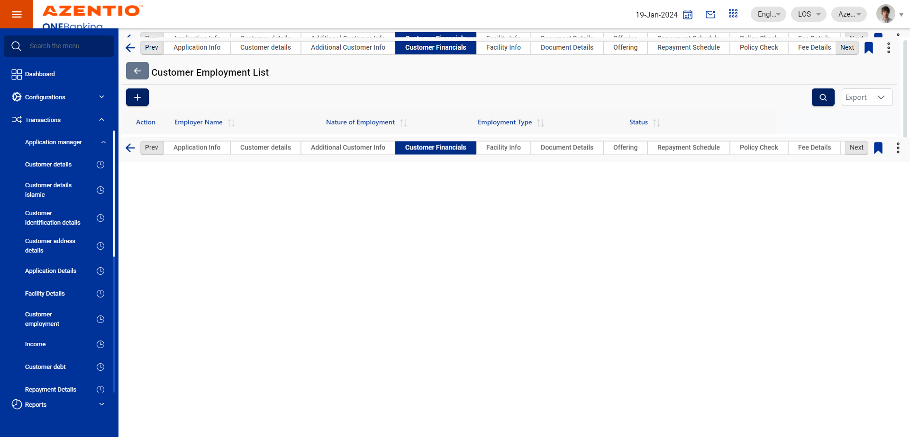And User select and update nature of the employmentstepdefinitions.HooksClass.addScreenshot(io.cucumber.java.Scenario)screenshot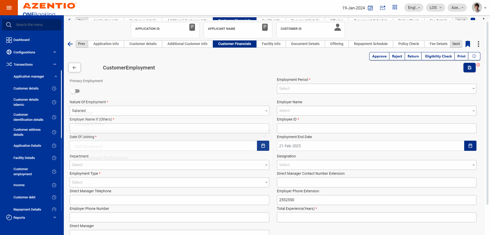And User select and update the employment periodstepdefinitions.HooksClass.addScreenshot(io.cucumber.java.Scenario)screenshot And User select and update the employer namestepdefinitions.HooksClass.addScreenshot(io.cucumber.java.Scenario)screenshotAnd User update the employer name othersstepdefinitions.HooksClass.addScreenshot(io.cucumber.java.Scenario)screenshot
And User select and update the employer namestepdefinitions.HooksClass.addScreenshot(io.cucumber.java.Scenario)screenshotAnd User update the employer name othersstepdefinitions.HooksClass.addScreenshot(io.cucumber.java.Scenario)screenshot And User update the employee idstepdefinitions.HooksClass.addScreenshot(io.cucumber.java.Scenario)screenshot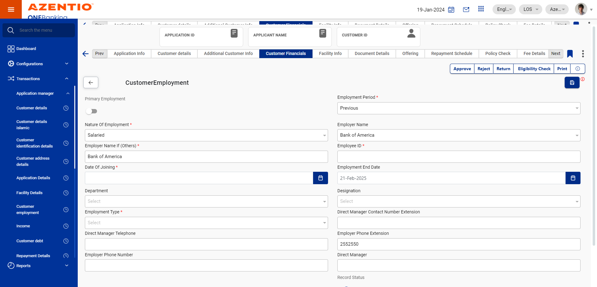And User update the date of joiningstepdefinitions.HooksClass.addScreenshot(io.cucumber.java.Scenario)screenshot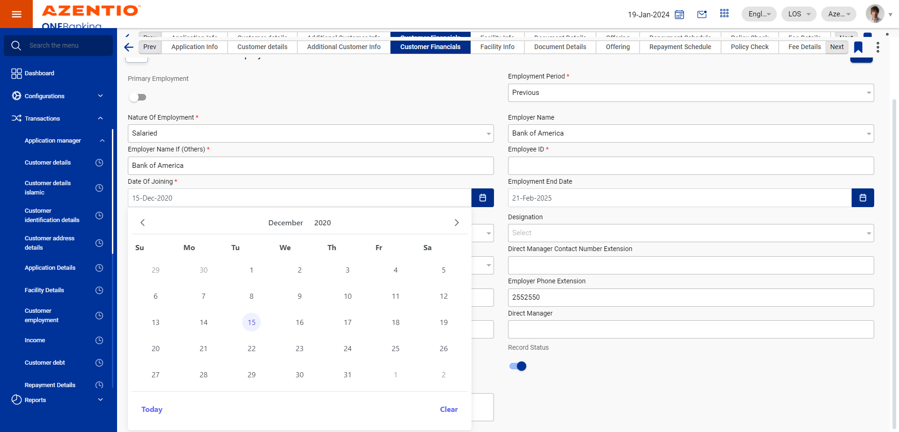And User update the Employment end datestepdefinitions.HooksClass.addScreenshot(io.cucumber.java.Scenario)screenshot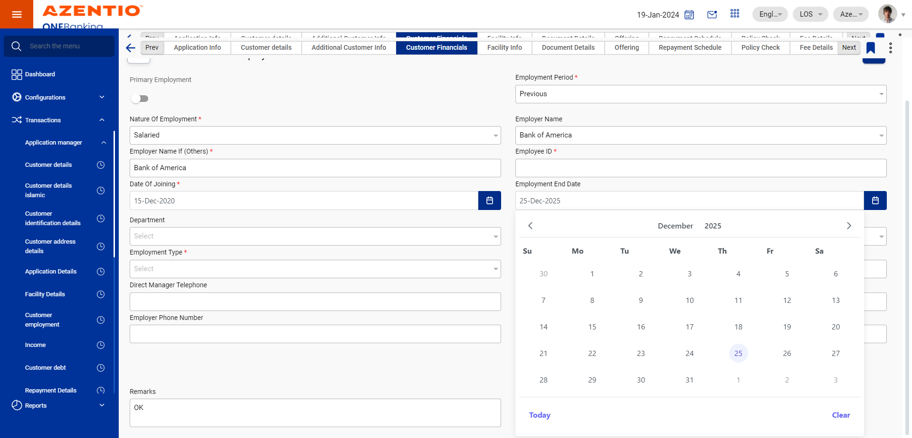And User select and update departmentstepdefinitions.HooksClass.addScreenshot(io.cucumber.java.Scenario)screenshot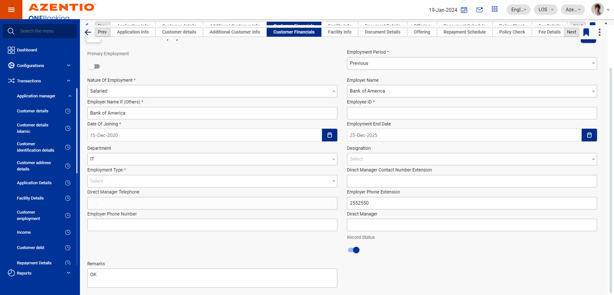And User select and update Designationstepdefinitions.HooksClass.addScreenshot(io.cucumber.java.Scenario)screenshot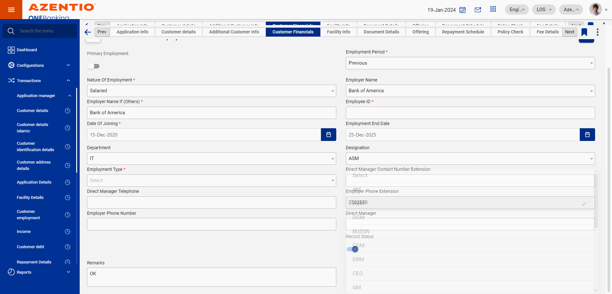And User Select and Update the Employment Typestepdefinitions.HooksClass.addScreenshot(io.cucumber.java.Scenario)screenshot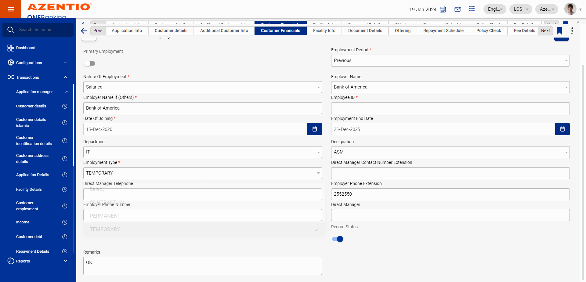And User update Direct Manager Contact Number Extensionstepdefinitions.HooksClass.addScreenshot(io.cucumber.java.Scenario)screenshot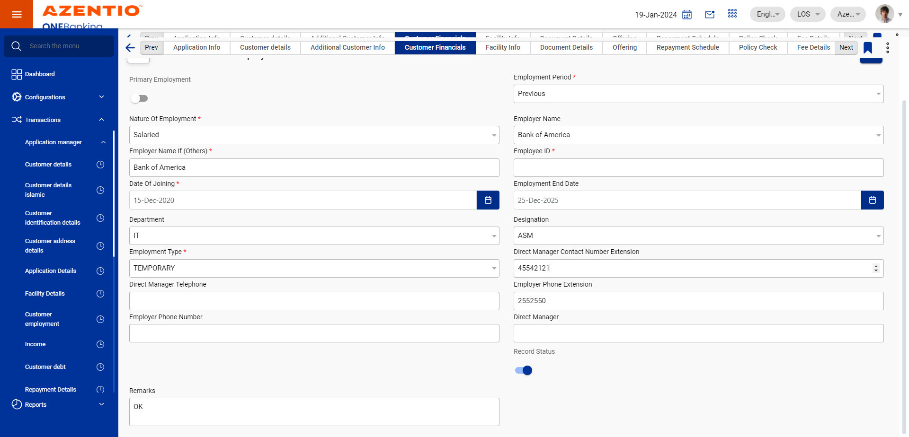And User update Direct Manager Telephonestepdefinitions.HooksClass.addScreenshot(io.cucumber.java.Scenario)screenshotAnd User update Employer Phone Extensionstepdefinitions.HooksClass.addScreenshot(io.cucumber.java.Scenario)screenshotAnd User select and update Statestepdefinitions.HooksClass.addScreenshot(io.cucumber.java.Scenario)screenshotAnd User update pincodeStep skippedAnd User Update Experience At Current EmploymentStep skippedAnd User Update Direct ManagerStep skippedAnd User Update Employer City CodeStep skippedAnd User Update Retirement Age YearsStep skippedAnd User Update RemarksStep skippedAnd User upadte and save the customer financial recordStep skippedPassVerify system should allow user to do a modification with valid dataGiven Launch the kuls application and Navigate to Application details view liststepdefinitions.HooksClass.addScreenshot(io.cucumber.java.Scenario)screenshotThen choose the data set id for modification with valid data in customer employmentstepdefinitions.HooksClass.addScreenshot(io.cucumber.java.Scenario)screenshot
And User update the employee idstepdefinitions.HooksClass.addScreenshot(io.cucumber.java.Scenario)screenshot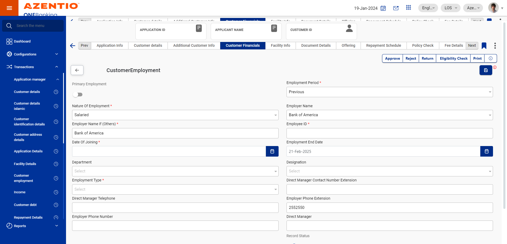And User update the date of joiningstepdefinitions.HooksClass.addScreenshot(io.cucumber.java.Scenario)screenshot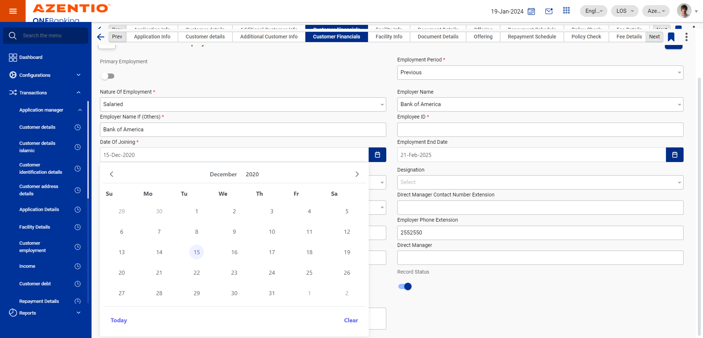And User update the Employment end datestepdefinitions.HooksClass.addScreenshot(io.cucumber.java.Scenario)screenshot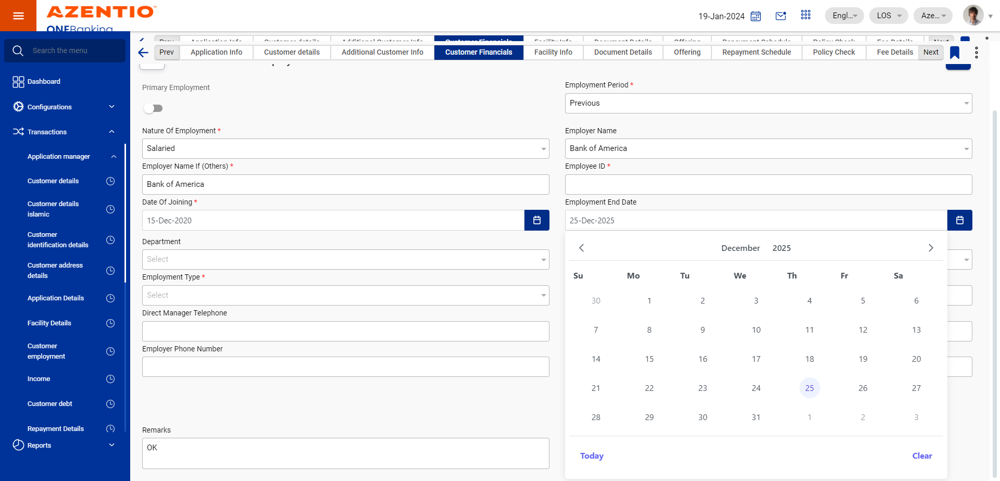And User select and update departmentstepdefinitions.HooksClass.addScreenshot(io.cucumber.java.Scenario)screenshot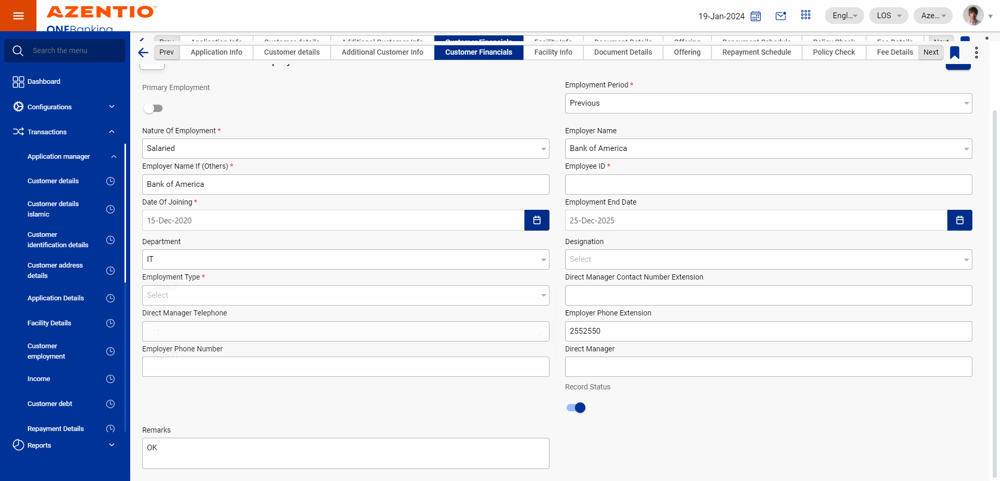And User select and update Designationstepdefinitions.HooksClass.addScreenshot(io.cucumber.java.Scenario)screenshot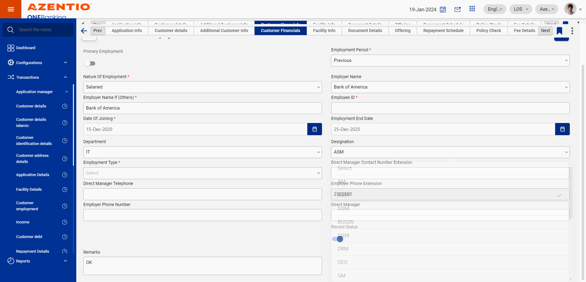And User Select and Update the Employment Typestepdefinitions.HooksClass.addScreenshot(io.cucumber.java.Scenario)screenshot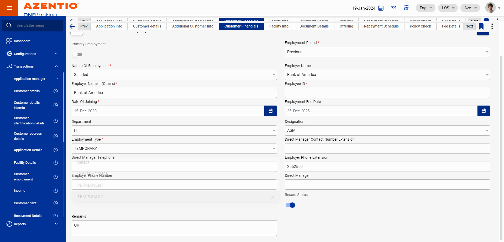And User update Direct Manager Contact Number Extensionstepdefinitions.HooksClass.addScreenshot(io.cucumber.java.Scenario)screenshot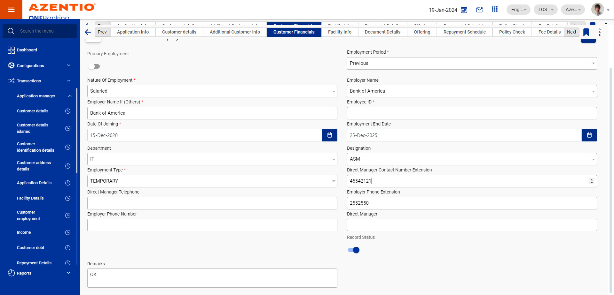And User update Direct Manager Telephonestepdefinitions.HooksClass.addScreenshot(io.cucumber.java.Scenario)screenshotAnd User update Employer Phone Extensionstepdefinitions.HooksClass.addScreenshot(io.cucumber.java.Scenario)screenshotAnd User select and update Statestepdefinitions.HooksClass.addScreenshot(io.cucumber.java.Scenario)screenshotAnd User update pincodeStep skippedAnd User Update Experience At Current EmploymentStep skippedAnd User Update Direct ManagerStep skippedAnd User Update Employer City CodeStep skippedAnd User Update Retirement Age YearsStep skippedAnd User Update RemarksStep skippedAnd User upadte and save the customer financial recordStep skippedPassVerify system should allow user to do a modification with valid dataGiven Launch the kuls application and Navigate to Application details view liststepdefinitions.HooksClass.addScreenshot(io.cucumber.java.Scenario)screenshotThen choose the data set id for modification with valid data in customer employmentstepdefinitions.HooksClass.addScreenshot(io.cucumber.java.Scenario)screenshot Then Click the inbox in customer employmentstepdefinitions.HooksClass.addScreenshot(io.cucumber.java.Scenario)screenshotThen click on search button to search the record of Customer Employment in inboxstepdefinitions.HooksClass.addScreenshot(io.cucumber.java.Scenario)screenshotThen enter the reference id of the Customer Employment recordstepdefinitions.HooksClass.addScreenshot(io.cucumber.java.Scenario)screenshotThen click on the entitle button of the Customer Employment record of that reference idstepdefinitions.HooksClass.addScreenshot(io.cucumber.java.Scenario)screenshotThen click on the Customer Financials tabstepdefinitions.HooksClass.addScreenshot(io.cucumber.java.Scenario)screenshotThen open the record of Customer Employment to modifystepdefinitions.HooksClass.addScreenshot(io.cucumber.java.Scenario)screenshotThen verify system should allow user to do a modification of Customer Employment Details record with valid datastepdefinitions.HooksClass.addScreenshot(io.cucumber.java.Scenario)screenshotThen verify system display the confirmation message post clicking on save button of Customer Employment Details recordstepdefinitions.HooksClass.addScreenshot(io.cucumber.java.Scenario)screenshot
Then Click the inbox in customer employmentstepdefinitions.HooksClass.addScreenshot(io.cucumber.java.Scenario)screenshotThen click on search button to search the record of Customer Employment in inboxstepdefinitions.HooksClass.addScreenshot(io.cucumber.java.Scenario)screenshotThen enter the reference id of the Customer Employment recordstepdefinitions.HooksClass.addScreenshot(io.cucumber.java.Scenario)screenshotThen click on the entitle button of the Customer Employment record of that reference idstepdefinitions.HooksClass.addScreenshot(io.cucumber.java.Scenario)screenshotThen click on the Customer Financials tabstepdefinitions.HooksClass.addScreenshot(io.cucumber.java.Scenario)screenshotThen open the record of Customer Employment to modifystepdefinitions.HooksClass.addScreenshot(io.cucumber.java.Scenario)screenshotThen verify system should allow user to do a modification of Customer Employment Details record with valid datastepdefinitions.HooksClass.addScreenshot(io.cucumber.java.Scenario)screenshotThen verify system display the confirmation message post clicking on save button of Customer Employment Details recordstepdefinitions.HooksClass.addScreenshot(io.cucumber.java.Scenario)screenshot
Started
Dec 5, 2022 05:59:27 PM
Ended
Dec 5, 2022 06:11:05 PM
Features Passed
0
Features Failed
1
Features
Scenarios
Steps
Timeline
Tags
| Name | Passed | Failed | Skipped | Others | Passed % |
|---|---|---|---|---|---|
| @AT-CE-004 | 0 | 1 | 0 | 0 | 0% |
| @AT-CE-006 | 0 | 1 | 0 | 0 | 0% |
| @CustomerEmployment_M1 | 0 | 1 | 0 | 0 | 0% |
| @CustomerEmployment_M3 | 0 | 1 | 0 | 0 | 0% |
| @AT-CE-005 | 0 | 1 | 0 | 0 | 0% |
| @CustomerEmployment_M7 | 1 | 0 | 0 | 0 | 100% |
| @CustomerEmployment_M8 | 0 | 1 | 0 | 0 | 0% |
System/Environment
| Name | Value |
|---|---|
| version | 10 |
| os | windows |
-
@AT-CE-004
1 tests
@AT-CE-004
1 failedStatus Timestamp TestName Fail 18:03:57 PM verify user is able to add new Employment Details record in the system by entering invalid data To Verify the fuctionalities of Customer Employment.verify user is able to add new Employment Details record in the system by entering invalid data -
@AT-CE-006
1 tests
@AT-CE-006
1 failedStatus Timestamp TestName Fail 18:06:06 PM Updation of before approved record in customer financials screeen To Verify the fuctionalities of Customer Employment.Updation of before approved record in customer financials screeen -
@CustomerEmployment_M1
1 tests
@CustomerEmployment_M1
1 failedStatus Timestamp TestName Fail 18:00:45 PM To verify fields when nature of employment is Salaried To Verify the fuctionalities of Customer Employment.To verify fields when nature of employment is Salaried -
@CustomerEmployment_M3
1 tests
@CustomerEmployment_M3
1 failedStatus Timestamp TestName Fail 17:59:28 PM To verify fields when nature of employment is Salf employed To Verify the fuctionalities of Customer Employment.To verify fields when nature of employment is Salf employed -
@AT-CE-005
1 tests
@AT-CE-005
1 failedStatus Timestamp TestName Fail 18:04:53 PM To verify maker user can able to update the customer employement details record with invalid test inputs To Verify the fuctionalities of Customer Employment.To verify maker user can able to update the customer employement details record with invalid test inputs -
@CustomerEmployment_M7
1 tests
@CustomerEmployment_M7
1 passedStatus Timestamp TestName Pass 18:09:11 PM Verify system should allow user to do a modification with valid data To Verify the fuctionalities of Customer Employment.Verify system should allow user to do a modification with valid data -
@CustomerEmployment_M8
1 tests
@CustomerEmployment_M8
1 failedStatus Timestamp TestName Fail 18:03:07 PM To verify fields in list view in customer employment To Verify the fuctionalities of Customer Employment.To verify fields in list view in customer employment
-
java.lang.IllegalArgumentException
1 tests
java.lang.IllegalArgumentException
1 failedStatus Timestamp TestName Fail 18:03:55 PM And verify the functionality of Search box with matching data in list view of the customer employment To Verify the fuctionalities of Customer Employment.To verify fields in list view in customer employment.And verify the functionality of Search box with matching data in list view of the customer employmentFail 18:04:51 PM And user Enter character value in Numeric Field To Verify the fuctionalities of Customer Employment.verify user is able to add new Employment Details record in the system by entering invalid data.And user Enter character value in Numeric Field -
org.openqa.selenium.NoSuchElementException
1 tests
org.openqa.selenium.NoSuchElementException
1 failedStatus Timestamp TestName Fail 18:00:43 PM Then select and verify the field Business registration date in customer employment To Verify the fuctionalities of Customer Employment.To verify fields when nature of employment is Salf employed.Then select and verify the field Business registration date in customer employment -
org.openqa.selenium.TimeoutException
1 tests
org.openqa.selenium.TimeoutException
1 failedStatus Timestamp TestName Fail 18:05:48 PM And blank the employement period dropdown To Verify the fuctionalities of Customer Employment.To verify maker user can able to update the customer employement details record with invalid test inputs.And blank the employement period dropdownFail 18:08:08 PM And User select and update State To Verify the fuctionalities of Customer Employment.Updation of before approved record in customer financials screeen.And User select and update State -
org.openqa.selenium.ElementClickInterceptedException
1 tests
org.openqa.selenium.ElementClickInterceptedException
1 failedStatus Timestamp TestName Fail 18:03:04 PM Then Fill the pincode in customer employment To Verify the fuctionalities of Customer Employment.To verify fields when nature of employment is Salaried.Then Fill the pincode in customer employment